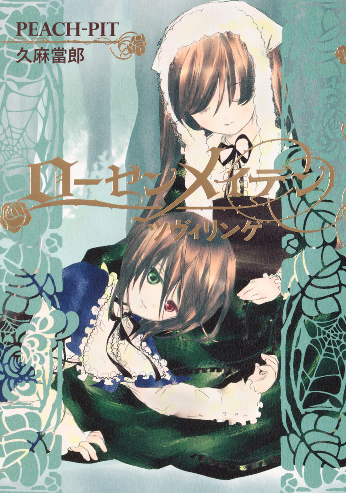
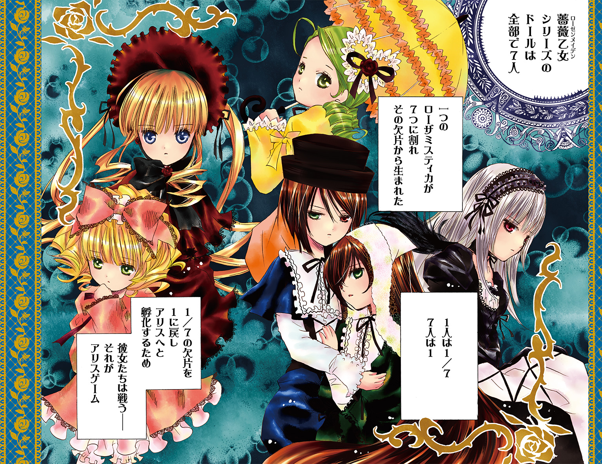
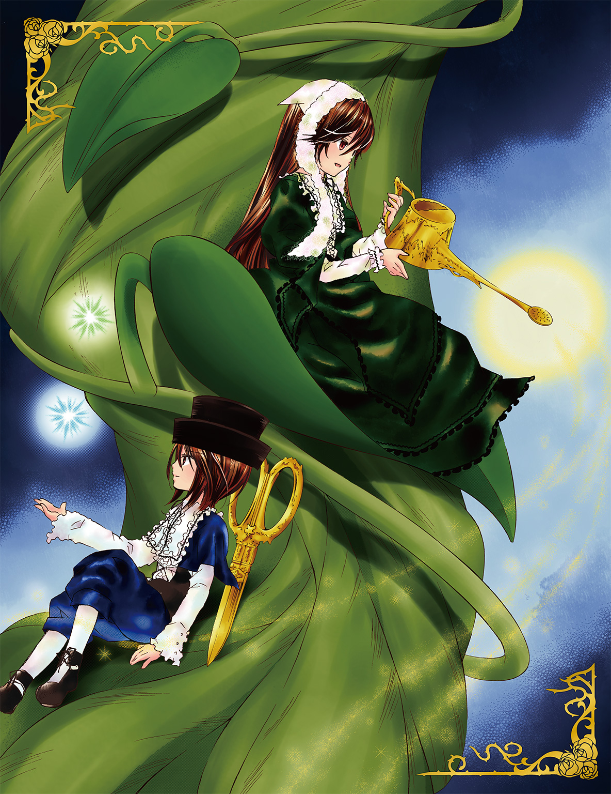
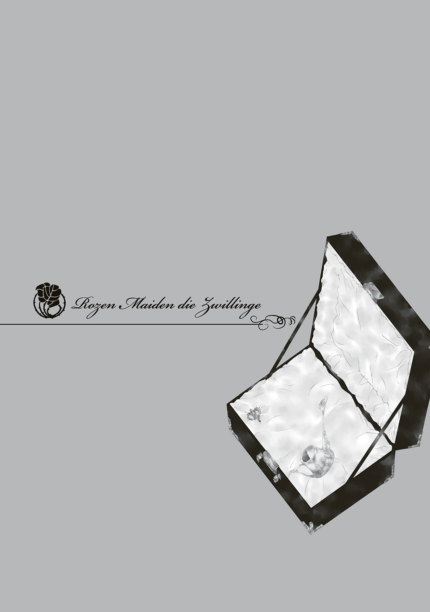
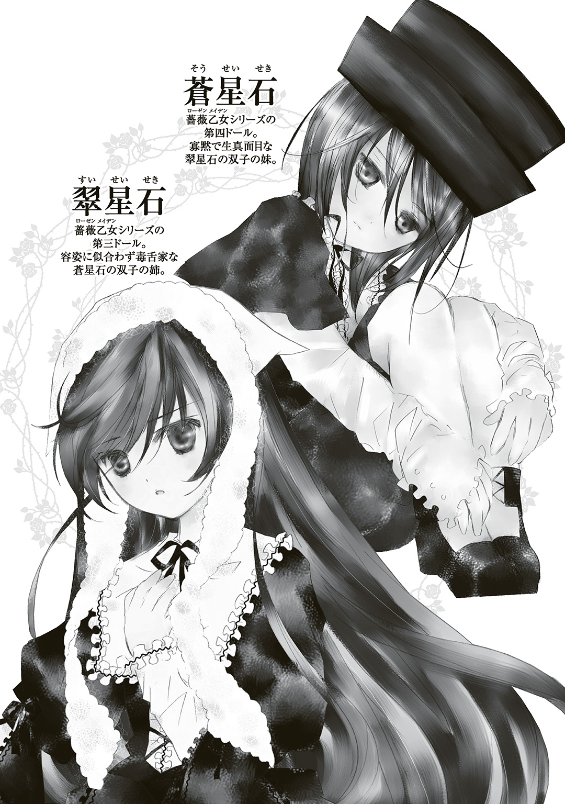
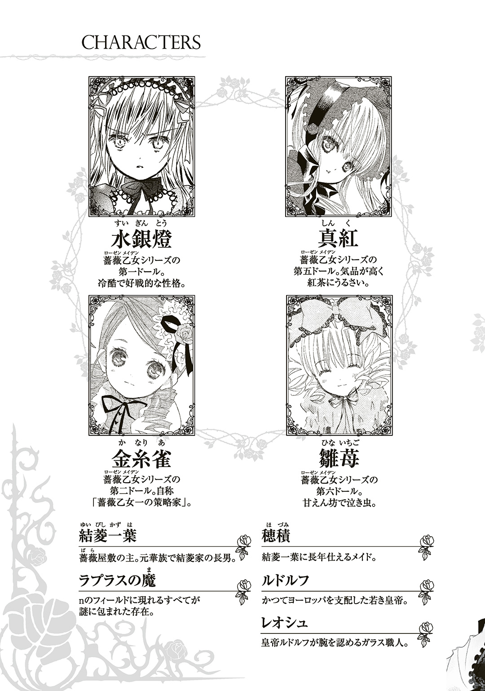
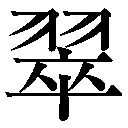
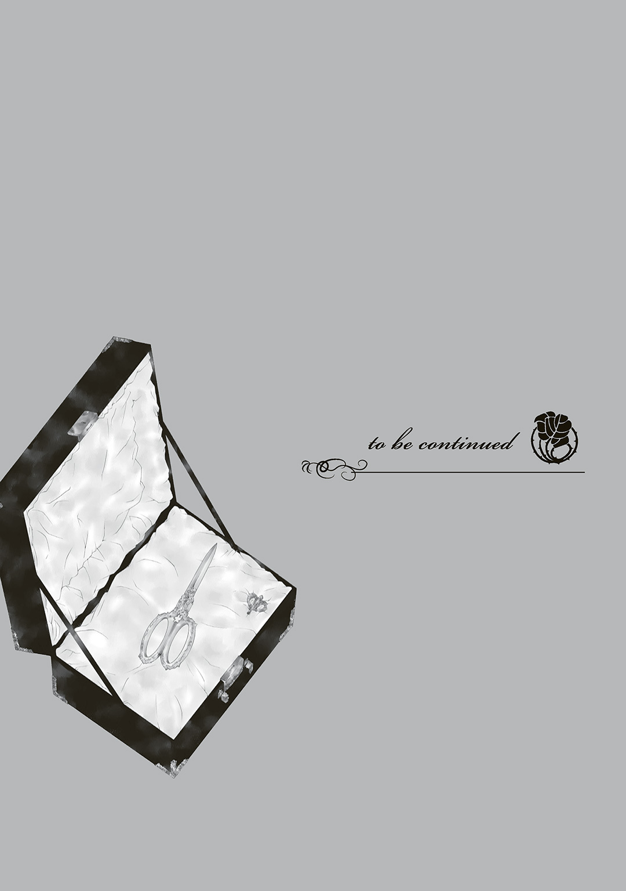

| ローゼンメイデン ツヴィリンゲ | |
| PEACH-PIT & 久麻當郎 | |

この本は縦書きでレイアウトされています。
また、ご覧になる機種により、表示の差が認められることがあります。





咲いた 咲いた 薔薇が咲いた
孤高の 愛しい 烈しい 切ない
気高い 無垢な 至高の 薔薇たち
からまるつたを ほどきにかかれば
棘が刺さって 血が流れる
お庭の主は からまる薔薇見て 何思う
シューベルトの弦楽四重奏曲が湧き出る泉のように流れている洋館の一室で、正装の男女たちがグラスを手に歓談している。鹿鳴館の時代を彷彿とさせるような華やかなパーティー、これは薔薇が咲き誇るこの館の若主人・結菱一葉の誕生日を祝うためのものだ。日本の戦後復興の波に乗って新しい事業を立ち上げ、成功させようという野心に満ちた一葉の姿は、誰の目にも輝いて映った。順風満帆な船出を迎えようとしている事業は、一葉を高揚させているだけでなく、大きな自信を与えていた。
弦楽四重奏団は第一バイオリンのアイコンタクトを合図にワルツを奏ではじめる。優雅で力強い『皇帝円舞曲』の調べに合わせ、客たちがそれぞれパートナーを見つけて踊り始めた。
「お相手をお願いします」
「光栄ですわ」
そんな中、華族の血を引き、気品漂う面立ちの一葉の周囲には、彼から声がかかるのを期待している若い女性たちがそれとなく集まり、その動向を窺っている。だが、一葉の視線は彼女たちではなく、双子の弟・結菱二葉に行っていた。二葉は実に美しい女性の手を取って踊りに夢中になっている。
「あの方、まるで朝摘みの薔薇のようですわ」
女性客の一人が妬みを通り越してそう褒めてしまうほど、二葉と踊っているその女性のみずみずしい美しさは際立っていた。
一葉と瓜二つの容貌で、同じく気品と美を備えた二葉と、部屋に居合わせた女性たちを色褪せさせるほど輝かしい女性。二人は目を引くほど楽しげに足を動かし、お互いを見つめ合っていた。一葉はそんな二人の姿を見てふと不安に襲われた。
――二葉――
一葉の言葉は声にならず、喉に張りついたままだ。
その時、轟音と爆風が一葉を襲った。床に倒された一葉がめまいを感じながら体を起こすと、館の壁に大きく穴が開いていた。
パーティーの客たちはみな床に倒れ、あたりには瓦礫やガラスの破片、木片などが散らばっていた。先ほどまでの華やかな雰囲気は一変し、洋館の広間は悲惨な有様だ。一葉は埃に咳きこみながら、二葉の名を呼んで部屋をさまよった。
「二葉、二葉っ！」
ふと、壁が崩れ去ってぽっかりと青空が覗いている一角に人影を見つけた。二葉と、さっき一緒に踊っていた女性だ。二人は爆破などなかったかのように汚れ一つなく、手を取り合ったまま立っている。
「兄さん、僕は旅立ちます。彼女と一緒に生きる決意をしたのです」
一葉は双子の弟の言葉に衝撃を受けた。
「何言ってるんだ、お前......。お前と僕は、一心同体じゃないか。旅立つなんて、そんなことできるわけない。今の事業にはお前が必要なんだ。一緒にやるって約束したじゃないか。それに、......僕はお前に離れられてしまっては生きていけない」
一葉が悲愴な顔で訴えているのに対して、二葉はあくまで朗らかな調子だ。
「兄さんはおおげさなんですよ。僕たち二人は離れていても双子です。心はいつも......」
「二葉っ、そんな悲しいことは言わないでくれ。僕を見捨てるのか、二葉っ」
兄の悲痛な呼びかけは届いていないのか、二葉はにこやかな表情のまま崩れ落ちた壁を越えて宙へと踏み出した。
「二葉っっ！」
一葉の心配をよそに、二葉は美しい女性と手をつなぎながら皇帝円舞曲に乗って浮遊する。その女性は微笑んで、一葉のほうへ振り返った。
「弟さんを取り戻したければ、ご自分の手でなさったら？」
だが、一葉は崩れた壁際のところに立っているだけで、空中に進み出る勇気が出ない。
「待てっ、待ってくれ！」
一葉は思わず体を傾けて空中に向かって足を踏み出した。しかし、透明な壁が行く手を阻んだ。空中に足止めされた一葉は反射的に透明な壁を叩く。すると、その壁はだんだん姿を現し、一葉の姿を映す鏡となった。驚き、焦って取り乱している自分の顔から視線を逸らすと、鏡の中の自分が「兄さん、さよなら」と呼びかけてくる。頭が混乱した一葉はその声から逃れようと振り返り屋敷の中に戻ろうとしたが、そちらも透明な壁に阻まれてしまった。どちらの方角に進もうとしても、自分の姿を映す鏡が現れ、「兄さん」と呼びかけてくる。四方八方をふさがれた一葉は拳を握り締めて思わず叫んだ。
「やめてくれっ！」
その自分の声が鏡に反響して一葉を襲う。耳を押さえた一葉は、右手に何かを握っていることに気づいた。ゆっくり掌を開くと、そこにあったのは古めかしい金属製のゼンマイだ。
「まきますか、まきませんか？」
あの女性の声が頭上から響いた。一葉は双子の弟の代わりに残されたそのゼンマイをじっと眺めた――
結菱一葉はなじみ深い天蓋の模様を目にして、自分が夢を見ていたことに初めて気づいた。悪夢としか言いようがないおぞましい夢のせいで、結菱はベッドに横たわったままびっしょり汗をかいていた。
年老いて足の自由を失ってから、こんなに汗をかいたことはなかった。まるで生きたここちがしなくて、ガウンを羽織りながらメイドの穂積を呼ぼうと体を起こした。その時、ベッドの脇に見慣れない物が置いてあるのに気づいた。
革製の鞄が二つ、並べて置いてあった。漆黒の鞄はまるで周囲の光を吸いつくすような重厚感があった。その神秘的なたたずまいに、結菱は心を惹かれた。メイドを呼び出すボタンに手をかけるのも忘れ、ベッドの端に座ると鞄に手を伸ばした。鞄の留め金を外そうとして、自分が何かを握り続けていたことに気づいた。
――ゼンマイ――......？
それは先ほどの悪夢で手にしていたゼンマイだった。鈍く光るゼンマイはハート型で植物のつるのような繊細な模様が入っている。その古風な様は時代を感じさせた。結菱はあの悪夢に引き戻されるような戦慄を感じながらも、その先を覗き見たい誘惑に勝てず、パンドラの箱を開けるような気持ちで鞄の留め金に手をかけた。バランスを崩して床に倒れこまないように気をつけながら、二つの留め金を外して鞄の蓋を持ち上げた。鞄の内側は白いビロードで覆われている。胎児が子宮の中に収まっているような姿勢で、美しい少年が体を丸めていた。小さな帽子をかぶり、ヨーロッパの貴族を思わせる華麗な衣装をまとっている。
「人......形......？」
結菱はうわ言のようにつぶやいた。鞄の中で安らかに眠っている格好の少年は大きさからして明らかに人形ではあるし、生命の息吹も感じられなかった。しかし、その肌の質感、造形はとても人形とは思えず、なまめかしいほどの精巧な作りだ。欲望の赴くまま、結菱はかさついた手を人形に伸ばして、その頰に触れた。温もりこそなかったものの、その弾力は人体を彷彿とさせるものがあった。そのまま人形を抱えて、膝の上に載せた。
結菱の膝上に横たわった人形は、がくりと頭を後ろに垂れている。関節が自由に動くぶん、その様子は意識を失った生身の人間を思わせた。人形なのか人間なのか曖昧で、その奇妙な感覚に結菱は心を震わせた。しっかりと作られた人形なのに、ちょっと扱いを誤っただけで壊してしまいそうな気がして、慎重に背中を抱えてその半身を起こそうとしたところ、なめらかな触りごこちの中に一か所違和感を覚えた。
――これは......。
結菱がもしやと思って人形の腰を確認すると、果たしてそこには金具があった。その金具には丸い穴が空いている。先ほど握り締めていたゼンマイをその穴に挿すと、カチリと音を立てたように錯覚するくらい、ぴったりとはまった。
――まきますか、まきませんか――
夢の中の言葉が脳裏を駆けめぐる。あの夢に導かれるままに行動するのは、ある一線を踏み越えてしまうような危険を感じた。だが、結菱の好奇心は抑えようがなく、ねじこむかのように力を入れてゼンマイを巻いていく。何かにこんなに熱中したことはここ数年なかった。最初は勢いよく巻いていったが、しだいにゼンマイが重くなり、結菱は手を持ち替えて巻き続けた。ついにゼンマイが動かなくなると、結菱はふう、と息を吐いた。期待をこめてゼンマイを抜き取り、人形をベッドに寝かせて見守った。
すると、カタカタカタと歯車が嚙み合うような音とともに人形がぎこちなく半身を起こした。人形はまぶたをうっすらと開け、まるで糸で吊られているかのようにふわりと立ち上がる。結菱は息を飲んで見つめた。
人形が完全にまぶたを開くと、左と右の瞳の色が異なっている。結菱の心臓は高鳴った。人形は帽子に手をかけると、膝を曲げて恭しく挨拶をした。
「初めまして。僕は薔薇乙女の第四ドール、蒼星石。あなたがゼンマイを巻いてくれたんだね」
「......あ、ああ......」
結菱は呆気に取られながらも、蒼星石と名乗った人形と短い会話を交わした。
――なんという精巧なからくり人形だ！ こんなものは初めて見た――
だが、蒼星石はさらに結菱を驚かせた。
「どうか、僕と契約を結び、僕のマスターになってほしい」
そう言うとその小さな手に余るくらいの大きさの指輪を差し出し、垂れる前髪の隙間から覗く強い意志を秘めたオッドアイで結菱を見つめた。ルビーのような深い赤の左眼、エメラルドのような緑色の右眼の組み合わせは、結菱を惑わせた。
「......何がどうなっているのだ......これはまだ夢の中か......？ 珍しいからくり人形はいままでいくつも見たが、もちろんこんなのはなかった......」
結菱は人形が自ら話し、動くことに対してどう受け止めていいのかわからず、思わず心に浮かんだことを口にした。蒼星石と名乗った人形は話を続ける。
「僕たち薔薇乙女は、人間と契約をすることで力を得る。もし僕と契約を結んでマスターになってくれるのなら、その力をあなたのために使う」
「力......なにができるというのだ......？」
すると蒼星石は体に不釣り合いなほど大きな鋏を取り出した。
「これは『庭師の鋏』。あなたの『樹』を健やかに育てるために、余分な葉や枝を取り除くことができる。そうすればあなたの樹は......」
「樹？」
結菱は苦笑した。
「樹なら庭にいくらでもあるから、好きにすればいい。もっとも、だいぶ荒れているからお前の手に負えるかわからんがな」
蒼星石は首を横に振った。
「いいえ、僕の言った『樹』は、この庭の樹のことではなく、あなたの心そのもの」
「心......？」
「人はみな『樹』を持っている。健やかに成長をする樹もあれば、成長を邪魔されて伸び悩むものもある。その樹が枯れれば、死んだも同然」
結菱はギクリとした。自分のことを言い当てられたような気がしたのだ。
「こんな老人の心など、いまさら健やかに成長できまい。たとえそんな力があったとしても、無駄だ」
結菱は吐き捨てるように言うと、天井を仰いだ。この数十年、双子の弟を失って心を枯らしたまま生きてきた結菱にとって、蒼星石の言葉は残酷に響いた。
「あなたの心だけでなく、あなたの大切にされている方でも、どなたでも構わない。この『庭師の鋏』で樹の枝葉を刈りこんで手入れすれば、病める樹も息を吹き返す」
「心の樹......」
結菱はしばらく考えこんだ後、蒼星石に鋭い視線を向けた。
「だったら、私の樹とやらの枝葉を全部刈り取って丸裸にしたらどうなる？」
「......その樹はやがて死ぬ」
「面白い......！ それなら契約を結んでやる。そして、私の樹を丸裸にしてくれ」
結菱はゆがんだ微笑を浮かべた。蒼星石は色違いの瞳を結菱に向けたまま、静かに答えた。
「契約を結んだら、僕はマスターの言葉に従う。でも、僕たち薔薇乙女は、マスターを媒介にしてこそ力を使える。そして、その力は姉妹同士の戦いに必要だ。だから、あなたの樹を殺すようなことはできない。どうか、契約を交わして僕のローザミスティカを護ると誓って。そうしたら、僕はあなたの命令に従うから」
結菱は蒼星石の話がさっぱりわからず途方に暮れた。「ローザミスティカ」とはなにか、「姉妹同士の戦い」とはなにか？ その疑問を脇に置いて、肝心な質問をした。
「契約を結んだら、お前は私の言うことをきくのだな？」
「はい」
その素直な返事を聞き、逆に結菱の心にためらいが生まれた。わけのわからないことに巻きこむために、自分を騙そうとしているのではないかと疑ったのだ。ただ、蒼星石の言葉を確かめているうちにふと気づいたことがあって、蒼星石に尋ねた。
「では、私ではなく、他の人間の樹を枯らせることはできるのか？」
ややあって、蒼星石が答える。
「はい」
結菱は思わずベッドを拳で叩き、右手を力強く伸ばした。
「早くその指輪をよこせ。今すぐ契約を」
蒼星石が小さな手で指輪を差し出すと、結菱は引ったくって左手の薬指にはめた。まるで結菱のために作られたように、その指輪はぴったりとはまった。
「指輪にキスを」
言われるまま結菱は左の拳に口づけをする。結菱の脳裏にある考えがよぎった。古くから不思議な力を与えるのと引きかえに契約を要求するのは、ファウスト博士とメフィストフェレスを例に挙げるまでもなく、悪魔であると。だが、結菱は自分が契約したのが悪魔でも構わなかった。いずれにしろ老い先は短く、その短い時間を悔いと恨みで費やすのは我慢ならなかった。長々と口づけをした後、ほくそ笑んだ。
「ありがとう、マスター」
蒼星石は再びお辞儀をした。
「さあ、さっそく見せてもらおう。お前の力を」
「待って。その前にやることがもう一つ」
「いや、待てない。契約したからには、私の命令に従ってもらう」
結菱に急かされた蒼星石は、しばらく下を向いて黙った。
――何を考えこんでいるのだ、この人形は......？ いや、そもそもからくり人形に何かを期待したのが間違いだったか。年老いたせいか、こんなおとぎ話を信じてしまうとは......。
結菱が失望しかけたその時、蒼星石が緑色と赤色の瞳を向けた。
「はい、マスター。それでは僕の力を今見せるから」
蒼星石は『庭師の鋏』の刃先を天蓋へ向けた。
「夢への扉よ、開け」
結菱は蒼星石の動作を見守っているうちに、急に眠気に襲われた。抗う間も与えられず、何者かに引っ張られるかのように体をベッドに横たえた。
結菱が目を覚ますと、そこはどこか見覚えのある荒涼とした空間だった。周囲に瓦礫が散乱していて、目の前の壁は半分崩れ落ちていて、埃が漂っている。思わず袖を顔にあてた。『皇帝円舞曲』が風に乗ってかすかに聞こえている。ここは、さっき夢に出てきた場所だ。結菱は悪夢の感触をまざまざと思い出して気分が悪くなった。
「マスターはさっきまでこの夢を見ていたんだね」
「いったいなにをしたんだ、お前は......！」
結菱は青ざめて怒鳴った。
「ここは夢の世界。マスターの心の樹を一緒に見たくて、連れてきた」
「こんな瓦礫の中を、車椅子で動けると思っているのか」
先ほどと違って年老いた現在の姿で夢の中にいる結菱は、車椅子を忌々しく見下ろした。
「ここは夢の世界。どこでもあり、どこでもないところ。あなたがどう動くかはあなたの心次第だ」
だが、蒼星石にそう教えられても、結菱は足を踏み出すことができない。
――夢だとわかっていたって、思い通りになんて動けやしない――
結菱の足は車椅子のステップに貼りついたままだ。そんな結菱の様子を見かねた蒼星石は、傍に寄ってきて手を差し出した。
「マスター、手を」
結菱は前屈みになって蒼星石に手を伸ばす。だが、やはり足は出ない。それでも懸命に体を倒して蒼星石の腕をつかんだ。と、蒼星石は自分の腕を引いて結菱が歩くよう促した。前に引っ張られた結菱は思わず足を踏み出したものの、足に力が入らず、そのまま床に倒れてしまった。
「マスター！」
無様に倒れた結菱は、ショックを受けて、車椅子に這い上がることもできない。
「まだ早すぎたみたいだ。いったん戻ろう」
蒼星石は鋏を突き立てると、自分を軸にして床に円を描いた。その円形の部分が抜けて、空洞が生まれた。
「マスター、ついてきて」
蒼星石は結菱の手をつかむと、床にできた空洞に飛びこんだ。
「......!!」
あっと驚くと同時に、結菱は蒼星石に引きずりこまれる形で空洞に落ちた。叫ぶことすらできず、落ち続けながら気が遠くなった。
胸に重みを感じて結菱が目を開けると、蒼星石が自分の胸に倒れこんでいた。起きあがって結菱の胸から降りた蒼星石は、帽子をかぶり直してお辞儀をした。
「おかえりなさい、マスター」
結菱はあたりを見回して、ここが見慣れた自分の部屋であることを確認した。
「......さっきのは......いったい......」
「マスターの夢の世界。最近、つらい夢を見たんだね」
蒼星石の顔に影が差した。
「......忘れた。もう覚えていない」
「僕の仕事は、ああやって夢の世界に入って直接影響を及ぼすことだ。でも、僕だけでは足りない」
「なに......？」
蒼星石は床にあるまだ開いていない鞄を指した。
「あの中に、僕の双子の姉、星石が眠っている。彼女の力があれば、僕の力はさらに強くなる」
「『双子の姉』ということは......お前はひょっとして女の子か？」
「はい」
結菱はふっと笑った。少年の格好をして真剣な表情で契約だの死だの戦いだのと口にするこの少女の人形が、急に愛しく思えた。結菱は「双子の姉」という人形にも興味をそそられ、もう一つの鞄に手を伸ばした。
留め金を外して蓋を開けると、今度はひと目で少女とわかる人形が、やはり膝を抱えるようにして眠りこんでいる。栗色の髪は腰を越えて足先まであり、鬱蒼とした森を思わせる深い緑のロングドレスが彼女の全身を覆っていた。
「双子の姉......だと？」
結菱は疑問を抱き、そう口にした後、その人形の顔をよく見ると蒼星石にそっくりなことに気づいた。
――ということは......。
一刻も早くこの人形が瞳を開く姿を見たくなり、鞄から少女の人形を取り出して、先ほどとは違ってためらいなくゼンマイを差しこみ、時計回りに回した。また、カタカタという機械音とともに人形が立ち上がっていく。ゆっくりと開いた瞳は、やはり色違いだったが、色は双子の妹とは左右逆の配置で、左が緑色、右が赤色だ。結菱は予想を裏切られ、この人形たちの創造主に感嘆した。
「ほほう......」
眠りから目覚めた人形は、目の前にいる人間に気づくとキャッと叫んで後退りすると、そのままベッドから転げ落ちた。
「星石、落ち着いて。この人は僕のマスターだよ」
蒼星石はベッドの上から手を差し伸べた。星石と呼ばれた人形はしばらくためらっていたものの、蒼星石の手を取ると、おずおずとベッドに上がった。結菱が顔を近づけると、蒼星石の後ろに隠れてしまった。
「はは、ずいぶん臆病な子だな」
結菱が気を遣って距離を取ると、星石は蒼星石の陰からわずかに顔を出した。
「薔薇乙女第三ドール、す、星石ですぅ」
「お前も蒼星石と同じく、契約を交わして私のために働いてくれるね？ 星石」
「は、働く？ 誇り高き薔薇乙女は、契約を交わしても奴隷扱いはごめんです。ね、寝言は棺桶の中で言いやがれ、ですぅ」
星石はおどおどとしながら啖呵を切った。最初の臆病な印象とのギャップに結菱は驚かされた。
「これは参ったな。双子なのにえらい違いだ」
「星石の無礼を許して、マスター。彼女に悪気はない。ただ臆病なだけ」
蒼星石は振り向くと、震えている星石に語りかけた。
「いいかい、星石。君は毎回手こずらせるけど、僕たち薔薇乙女は契約を交わさないと力を発揮できないのは知っているだろう？ 僕はすでに契約を交わした。彼の願いのために『庭師の鋏』を使う覚悟ができている」
「このおじじの願いって、どんな願いなのです？」
「それは......心の樹を枯らしてしまいたい人がいるんだ」
「樹を......？」
星石は口元に手をやって驚いた。
「どうしてそんなことを......願うのです？」
新たに動き出した人形にそう尋ねられ、結菱は機嫌を悪くした。
「そんなことはどうでもいい......！ お前は私と契約を交わして言うことを聞けばいいのだ。ほら、お前の指輪をさっさとよこせ」
結菱の手が星石の腕をつかもうとしたところ、星石はさっとかわした。
「星石......？」
「やなこったです。こんな性悪じじいと契約を交わすなんて、まっぴらごめんです」
「本気かい、星石？」
「本気も本気、人の樹を枯らすなんてひどいことに力を貸すなんて、薔薇乙女の名折れですよ。薔薇乙女第三ドール、星石がその悪巧みを止めてみせるです。さあ、蒼星石、こんなじじいとはさっさと手を切って、他のマスターを探しにいくですよ！」
星石が蒼星石の腕を引っ張ったが、蒼星石は動こうとしなかった。
「蒼星石？」
蒼星石は星石の手を振り払った。
「......一度交わした契約を違えることはできない。そんなことは君も重々承知だろう？」
蒼星石の瞳は星石を射るようにまっすぐ捉えていた。
「で、でもっ、こんな極悪人がマスターなんてダメですっ」
「君がどう思おうと、この人が僕のマスターだ。それが替わることは、太陽が西から昇ろうとありえない」
「そんな......」
双子の人形のやりとりをずっと見守っていた結菱がパン、と手を叩いた。
「これこれ、いきなり姉妹喧嘩をしてどうする。私のために働いてくれるんじゃなかったのか？」
結菱が問うと、
「はい、マスター」
「やなこったです」
と同時に返事が来た。
「誇り高き薔薇乙女の力をそんな悪いことに使おうなんて、許すまじです。双子として、蒼星石が間違った道を進むのを止めてやるです」
星石が緑のドレスを震わせ、力をこめて宣言した。蒼星石は視線を落としたまま黙っていたが、しばらくすると顔を上げて鋭い視線を星石に投げかけた。
「......僕と君はいつも一緒だった。もともと一つだったローザミスティカを分け合った僕たちは、二人で一人と言ってもよかった。でも、この対立は決定的だ。僕は譲る気はない。僕と君も、ついに別れる時が来たのかもしれない」
「なに言ってるです!? この性悪じじいのために、二人が別れるなんて、おかしいです」
星石が怒りの目を結菱に向け、近づこうとすると、蒼星石の『庭師の鋏』が行く手を遮った。
「その人は僕のマスターだ。マスターを傷つけることは僕が許さない」
「そ......蒼星石......」
星石は蒼星石のほうを振り向いたまま、動かなかった。その場の張り詰めた糸を断ち切ったのは、扉を叩く音だった。
「旦那様」
部屋の外から女性の声がした。星石と蒼星石は同時に扉のほうを見た。カチャリ、という微かな音とともに、メイドが現れた。結菱のそばに立っている人形二体を見つけて驚きの表情を浮かべたが、声は上げなかった。四十代くらいの落ち着いた雰囲気の女性で、一つ一つの動作に謙虚さが備わっていた。
「夕食の時間か？」
「はい。今朝獲れたスズキがメインです」
少し思案してから結菱が頼む。
「見ての通り、急な客人を迎えた。二人分、追加してくれないか」
「はい？ 客人......？」
メイドがいぶかしんで聞き返した。
「見ての通りだ。客人を差し置いて、私だけ夕食をとるわけにもいかんだろう？ 君塚には『急で申し訳ないが、二人分の夕食を追加で用意してほしい』と伝えておいてくれ」
「......はい」
「穂積、そんな顔をしないでくれ。私は正気だよ」
結菱はメイドに向かって微笑みかけたが、メイドの穂積は悲しげな表情のまま部屋を出た。
「メイドの無礼を許しておくれ。あれは長年、愚直に勤め続けてくれている女だ。この老いた私のことが心配で仕方がないらしい」
結菱は優しげな口調で語った。
「今言った通り、二人に夕食を用意した。人形に夕食を勧めるのは初めてだが、よかったらこの老人につきあってくれ。私は無用な争いは好まない。双子の二人の仲を裂くつもりはない。星石、私のことがいろいろ気に食わないみたいだが、少し時間をかけて考えてくれないかね」
「誰がお前なんか......」
「喜んで、マスター」
星石が反発しようとしたところで蒼星石が遮って、結菱の提案を受け入れた。
「君と二人きりで話がしたい」
蒼星石はそう言って、星石をじっと見つめた。
「はい......望むところですよ」
町を見下ろす高台に、結菱の屋敷はひっそりと建っている。月の表面を思わせるような、うっすら緑がかった灰色の石で造られた洋館は、左右対称の構造もあいまって重厚な雰囲気だ。広大な敷地の外周を背の高い木々が取り囲み、移ろいゆく外界から古い屋敷を守っている。アールデコ調の優美な造りの門から垣間見える壮麗な洋館は、結菱家がかつて華族として繁栄した有様を雄弁に物語っている。
いま、屋敷は夕暮れ時の光に照らされ、茜色に染まっている。古びたことで威厳を増した屋敷とは違って、庭園は荒れている。歳を重ねた屋敷の主が、きれいに手入れされた庭園を好まなくなったためだ。
メイドの穂積に何度となく手入れをするよう進言されたものの、結菱は「住人が老いぼれていくのに、庭園だけ瑞々しいのは不釣り合いだ」と断り続けた。
かつて結菱が若かったころ、庭園は庭師によって美しく整えられていた。門と屋敷を結ぶ直線上に長方形の池があり、その周囲に巡らされた薔薇の垣根とアーチは豪勢なもので、『薔薇屋敷』と讃えられるほどだった。だが、今では薔薇の枝は乱雑に伸び、下を向いてしまっている。星石は薔薇を見上げてため息をついた。
「せっかくの薔薇が、これではダメですね......。あの性悪じじいの庭とはいえ、悲しいですぅ」
「まずは枝を剪定しないと。『庭師の鋏』の出番だ」
蒼星石は薔薇の茂みを見上げて、どこに鋏を入れたらいいのか考え始めている。星石はそんな蒼星石の横顔を悲しげに見つめた。
「ほんとに......あのマスターについていくのですか？」
「ああ。僕のことはよく知っているだろう？」
星石はその言葉を聞いてさらに悲しくなった。蒼星石が交わした約束を破ったことは一度もなかったからだ。ましてや、マスターとの契約という重大な契りを違えることはない、と星石も理解していた。でも、それであきらめる星石ではなかった。
「蒼星石のわからず屋！ 二人はいつまでも一緒って......一緒って約束したのに......」
「あれは叶わないことを願っただけだ。約束じゃあない」
「叶わない......？」
「だって、僕ら薔薇乙女は、いずれアリスゲームを戦う運命にある。アリスとなってお父様のもとへ行けるのはただ一人だ。君だってそれを知っているはずだ」
蒼星石の横顔は厳しくなっている。
「でも......」
「君が戦いを避けても、他の姉妹たちがローザミスティカを奪いに来る。逃げることはできない。戦うしかないんだ」
蒼星石に真正面から叱られて、星石はオッドアイを潤ませた。
「でも、でも......星石は嫌です。他のドールと戦うのも嫌です。蒼星石と戦う気なんて全くないです。星石が蒼星石と一緒に過ごしたあの楽しい日々はなんだったですか？ いっそあんなことがなければ、こんなにつらい思いをしなかったのにです」
星石の瞳から涙が零れた。金平糖のような涙の粒は頰を伝って転がり落ちた。
「あの時間が永遠に続けばよかったのに......」
「それができないのが僕らの宿命だ。僕らドールズもこの薔薇と同じようにいつかは朽ちる。時はめまぐるしく流れていく。あの日々はもう過ぎ去ったこと。駄々をこねても何も始まらない」
「蒼星石は冷たいです！ そんな雪の女王みたいなことは言うな、ですよ。星石だってわかってるですよ。あの時間が永遠に続くなんてあり得ない、って。でも、なかったことにはしないでほしいです。あれは星石には大切な大切な時間だったのですよ」
「......それは僕も同じだ。あの時のことは、マスターの恩は、決して忘れない」
その言葉を聞いて星石は蒼星石にすがった。
「でしょう？ 覚えてますか、あのきれいなきれいなガラスが完成した日のこと......星石が如雨露の甘い水で〈レオシュの樹〉を育ててあげたからこそですよ、あのガラスができたのは」
「僕が〈マスターの樹〉の手入れをしたからだろう？」
「ちがいますっ。だって、あのガラスを作り出したのはレオシュなんですから」
「でも、レオシュがあの華やかなガラスを作れたのは、僕のマスターが手助けしたおかげだろう？」
言い合いをしているうちに、蒼星石が口元を緩めて柔らかい表情になった。それに釣られて、泣いていた星石も微笑んだ。
「まったく蒼星石は意地っ張りですぅ。自分の手柄にしたがるんですから。あんなカオスは一人きりじゃ乗り越えられないです」
「うん、あれはたしかにカオスだった」
二人は朽ちかけている薔薇の庭で、一緒に過ごした時代に想いを馳せた。
舞台下のオーケストラピットでばらばらに鳴らされていた楽器が、急に音を立てるのを止めた。
真っ暗な空間を頭上から照らすスポットライトのように、オーボエのＡ音が沈黙を破った。それに合わせて、バイオリンやチェロが音を重ねる。そのうちにフルートが勝手に走りだして音階を駆け上がると、トランペットやホルンも肩慣らしのようにおのおのの音を鳴らした。チューニングが一通り済んで指揮者が指揮棒で譜面台を叩くと、音は再び止んだ。
舞台を隠している緞帳の前に、燕尾服姿の者が現れた。白い手袋を着け、黒いシルクハットをかぶっているが、その下の顔は人ではなくウサギだ。そのウサギが客席に向かって語りかけた。
「みなさま、道化が物語の口上を述べることをお許し下さい。さて、今夜の演目は、かつて繁栄したある帝国を舞台にした、科学と魔術、芸術とが渾然一体となっていた古き良き時代のお話でございます。若き皇帝ルドルフと彼がひいきにしていたガラス職人の少年、そしてその二人が宝としていた二体の人形のお話です。人形といってもただの人形ではございません。歩き、食べ、戦う、世にも珍しい人形です。それでは、ごゆるりとどうぞ」
幕が重々しく開くと、舞台上にはヨーロッパの地図が広がっていた――
――かつて、ヨーロッパは大きな帝国に覆われていた。大西洋からドナウ川までの間に無数の王国や公国が存在し、それらの頂点に立つ皇帝が王家の血筋を引く者から選ばれ、広大な帝国を統治した。星石と蒼星石が運命の導きによりその帝国に降り立ったのは、若き皇帝ルドルフが統治していた頃のことだ。
弱冠二十歳の、才気あふれるルドルフが皇帝に選ばれて即位すると、皇帝の居住する都は活気に満ちた。新しい文化の息吹が芽生えつつあった街に若い皇帝が降臨し、民衆は沸き立った。一方、王宮内ではルドルフが帝位に就いたことで混乱が起きていた。政治にはあまり関心がないルドルフのせいで、王宮内の諸々の手続きが滞ってしまったからだ。
「陛下は？ 陛下のお姿を誰か見ないかっ」
王宮の高い天井に野太い声が響き渡った。侍従のヨハネスが巨体を揺らして、ルドルフを捜して王宮内をうろついている。
「まったく、どこに隠れてしまわれたのだか......」
そう嘆いたヨハネスは、ふと思い当たることがあって、王宮とは渡り廊下でつながっている塔に足を向けた。塔の、石のらせん階段を登りつめたところでふう、と一息吐くと、扉を開けた。部屋は暗く、ランプが一つ弱々しく灯っている。外に張り出したバルコニーに座って、夜空に向けられた機具を覗いている男がいる。
「マイアー、陛下は？ 陛下はおらぬか？」
ヨハネスが部屋の入り口から声をかけた。だが、マイアーと呼ばれた男は星を観察するための機具、つまり望遠鏡を覗いたままだ。
「マイアー！」
ヨハネスがもう一度呼びかけると、マイアーは機具から目を離さずに答える。
「陛下はいない。邪魔するな」
「どこに行ったか知らぬ......」
「知らないって！ 気が散るからあっちに行っててくれ。ペルセウス座流星群を眺めている時にゴチャゴチャ言ってると、縛って大時計の重しにするぞ」
マイアーの剣幕に圧されて、ヨハネスはすごすごと塔を後にした。気を取り直して、再び王宮に戻って皇帝の姿を捜すものの、誰も行方を知っている者はいなかった。
「もしや......」
ヨハネスは王宮の門を出ると、敷地の端にある武骨な外見の建物に向かった。煉瓦を積み上げた煙突から煙が盛んに吹き出ている。木の扉を押し開けると、むっとした熱気に当てられた。部屋の奥に窯があり、その内部はオレンジ色の光と熱を発している。まるで地獄を切り取って持ちこんだかのようだ。その窯の中をじっと覗きこんでいる少年がいる。金髪の少年は顔を橙色に染めながら、鉄の棒を片手に時機をうかがっている。
「陛下、陛下！」
ヨハネスがいきなり大きな声で皇帝を呼ぶと、少年はビクッとして尻もちをついた。
「なんだ、ヨハネスさん......。びっくりさせないでよ」
「レオシュ、陛下を知らんか？ また雲隠れされてしまって困り果てて......」
ヨハネスが愚痴をこぼすと、隣の部屋へ通じるドアが開いた。
「まったくもう、邪魔すんなです。レオシュを怖がらせちゃダメですよ」
隣の部屋から真っ先に飛び出してきたのは星石だ。ヨハネスに『庭師の如雨露』を向けて釘を刺した。その後ろから、シックなケープに身を包んだ皇帝ルドルフが現れた。ヨーロッパの過半を占める大帝国の皇帝は、まだ二十歳を少し越えたくらいで人を圧倒するような威厳はない。だが、彫りの深い顔の奥に潜んでいる大きな眼と品格のある口元は思慮深さを感じさせ、敬意を抱かせるほどの魅力を持っている。ルドルフは腕に少年服の人形・蒼星石を抱えていた。
「騒々しいぞ、ヨハネス。いま、大事なところなんだから、静かにしてくれ」
ルドルフは唇に指を当てた。ヨハネスは胸に手をあててかしこまり、その姿勢のままで抗弁する。
「ですがその、陛下......臨時の会議が始まっておりまして、みな陛下をお待ちです」
ルドルフはヨハネスを無視してレオシュを見やった。
「ヨハネスのことは気にせず、集中してくれよ」
「はい......頑張ります」
レオシュは立ち上がると再び坩堝の中で光っている溶けたガラスとにらめっこを始めた。皇帝ルドルフに腕を買われて試作品を制作中だ。
「ほらほら、せっかくレオシュが試作品を作ろうとしているんだ。邪魔、邪魔」
「ですが、会議が......こんな見習いの少年と会議と、どちらが大切か、私めが口にするまでもございません」
「レオシュは見習いじゃない。一人前の職人だ。それに、どうせ大臣たちが自分の手柄を売りこむためにやっているだけの会議だ。俺はほっといて勝手にやっててくれ」
「しかし、陛下がいらっしゃらないことには会議が......」
「いいから、『熱で臥せっている』とでも言っておいてくれよ」
ルドルフは軽い調子でヨハネスをあしらうが、ヨハネスはなおも食い下がる。
「ですが、病弱という評判が立ちますと、今後の執政に差し障りが出てきてしまいます」
と、その目の前に『庭師の鋏』が突きつけられる。蒼星石が無表情のまま、威嚇するように『庭師の鋏』で二、三度切る仕草をした。
「ほら、この子の機嫌を損ねると大変なことになるぞ。早く行った、行った」
ルドルフがヨハネスを脅すと、ヨハネスは「ひいい」と逃げ出した。
「やっと邪魔者がいなくなったです。レオシュ、ここは一つ勝負どころです。炎を制する者が世界を制する、ですよ！ 火の玉となってぶち当たれです」
星石の妙な声援を受けて、レオシュは額の汗をぬぐった。
「お前に言われなくても燃えそうなくらい暑いけどな」
汗でレオシュの背中にべっとりと作業服がくっついている。長い鋼鉄の棒を持つ左手の指には、繊細な造りの薔薇を模った指輪がある。星石との契約の証だ。
レオシュは頃合いを見計らって棒を窯の中に差しこみ、それを回して煌々と輝く液体を絡め取っていく。回転させながら棒を坩堝から引き抜くと、その先に水あめ状のガラスが巻きついている。鉄の台に押しつけて形を整えると、棒の端をくわえて息を吹きこんだ。赤く光っていたガラスが膨らんでいく。ガラスは伸びていくにしたがって色が薄まった。それをまた窯の中に入れて熱し、形を整えて膨らます。それを何度も繰り返す。
「ふう、膨らみにくいや」
ルドルフがすかさず質問をする。
「灰を多めにしたから、硬いのか？」
「はい、たぶんそうですね。ティコ先生の言ってた通りです。これなら相当硬いガラスができるはず」
レオシュは答えながら棒を回してガラスを丸くすると、息を吹きこんだ。ガラスは徐々に膨らみ、美しい曲線を描いた。
そのとき工房の扉が開いた。顔を覗かせたのは、ローズレッドの華やかなドレス姿のクララだ。皇帝ルドルフの従妹でレオシュと同じ年頃のクララは、肩の露出したドレスのせいで、首がよりほっそり見える。
「......ねえ、まだ終わんにゃいの？」
つまらなそうな顔で不平を訴えると、箒で床を掃除をしていた星石がすかさず駆け寄った。
「ダメです！ もう今日は遊ぶのあきらめるです」
「そんなあ、今日ずっと一人でさびしかったんだから。遊んでくれなきゃ困るにゃあ。じゃなかったら、クララも混ぜてよう」
クララは手近にあった紐を手にすると、リボンに見立てて塗料の瓶にくくりつけた。
「クララ！」
クララの駄々っ子ぶりを抑えようと、星石が箒の柄でクララをぺしぺし叩く。が、クララはいたずらっぽい瞳を輝かせてその柄をつかむと、そのまま星石を部屋の外に引きずり出そうとする。
「ぬぬぬ......」
「ギギギ......」
星石とクララの間で箒の引っ張り合いが始まった。柄から穂先が抜けそうになるくらい、二人は強く引き合っている。その争いを見かねた蒼星石がルドルフの腕から飛び降りると、二人に向かっていった。『庭師の鋏』が光ると同時にクララと星石は吹っ飛んで壁に身体を打ちつけた。蒼星石が箒を真っ二つに斬ったのだ。
「いてて......」
「ふえーん」
クララはわざとらしく泣くまねをした。棒を回してガラスを成形していたレオシュが心配して振り向こうとしたが、ルドルフに制止されて作業を続けた。ルドルフはクララの腕をとって助け起こした。
「クララはいつまでも子供だな。そんな様子じゃ、貰い手がつかないぞ」
ルドルフがそうたしなめると、クララはムスッとして答えた。
「いいもん、どうせどこか遠い国の顔も知らない相手と結婚しなきゃいけないんだもん」
「クララッ」
「ベーっ」
ルドルフに向かって舌を出すと、クララは豊かな髪を振り乱しながら外に飛び出した。
「まったく子供だな、クララは。あれじゃ本当に結婚相手も見つからない」
ルドルフは一族のおてんば娘の将来を嘆いて、首を横に振った。
そうした数々の邪魔にもめげず、レオシュは大きなガラスの壺を焼き上げた。星石と蒼星石の背丈ほどもある壺だ。十分に冷やして透明になった後、壺の口をレオシュが指で弾くと、高い音が部屋に響いた。
「十分硬く仕上がりました」
ルドルフも同じように指で弾き、目をつぶって金属的な音を堪能した。
「よくやった」
レオシュの肩を叩いたところで、後ろから長いローブをまとった髭の男が現れた。
「これからが難関ですな、陛下。エングレーヴィング前の彩色が一番の山場です」
錬金術師のティコが黄金色の液体を入れたビーカーを手に微笑んだ。このティコこそが、レオシュが新しく作り出そうとしているガラス作品の化学的なアドバイスをしている人物だ。
「ガラスを硬くしたのでごそっと剝がれる心配がなくなり、彫りやすくなったはずですが、その代わり相当力が要ります。力加減を間違えると大きく傷つけることになってしまいますな。私が手伝えるのはこの塩化銅を使った染料を合成するところまで。染めて焼くのはレオシュ、君の腕にかかっています。慎重にやってくださいよ」
ティコの励ましに、レオシュは小さな声で「は、はい」と答えた。表情が冴えない。
「どうしたんです？」
星石が首を傾げてレオシュの様子を窺った。レオシュは椅子に腰かけると、汗をぬぐった。先ほどまでの勢いはなく、元気がない。
「ビビってる場合じゃないです。ここが正念場ですよ」
星石の励ましを受けても、レオシュはため息をついてガラスの壺を睨んでいるだけだ。
「最近、父さんにも怒られてばかりだしなあ......」
「君の父親は素晴らしいガラス職人だから、君を叱るのも無理はありません。君が立派な職人、いや、自分をしのぐ職人になるのを期待しているからこそです。君の彫刻の腕はすでに父親を超えています。あとはガラス成型と彩色の技量が追いつけば、父親を超えるのも夢じゃありませんな」
ティコに励まされたレオシュは、プレッシャーに耐えられず天井を仰いで黙ってしまった。
そんなマスターの不甲斐ない様子に業を煮やした星石が挑発する。
「レオシュのチビな肝っ玉じゃ無理ですぅ」
「なんだと!?」
しおれていたレオシュが反応した。
「お前のようなビビリが皇帝に献上するガラスを作ろうなんて、百年早いですぅ」
レオシュはその毒舌にやられ、空気の抜けた風船のようになってしまった。
「なっ、ここでへなってどうするです？ 本気にしてへこむ奴がどこにいやがるです」
星石はレオシュの足を蹴飛ばしたが、それにも反応がない。
「星石。それ以上煽っても無駄だよ」
「まったく手のかかるやつです。いいかげん、独り立ちしやがれってんです」
ルドルフは優しいまなざしでレオシュを見守っている。
「レオシュの繊細な心があの彫刻を生み出しているのだから、そう責めるな。蒼星石、星石、二人の力が活きる時だよ」
蒼星石はルドルフの前で恭しく頭を下げた。
「マスター、レオシュを手助けするため、少しお時間を下さい。レオシュの『樹』を手入れしてやらなきゃ」
「早く行っておやり」
ルドルフの許可を得た蒼星石は、うなだれているレオシュを凝視した。
「な、なんだよ......」
と、つぶやく間もなく、レオシュは意識を失ってガクッと椅子に倒れこんだ。その頭上に水面のようなものが浮かび上がる。蒼星石が作り出した「夢への扉」だ。蒼星石が手を伸ばすと、水面が波立った。ティコは驚いてその様子を凝視している。蒼星石がジャンプしてその水面に飛びこむと、星石が続いた。手品のように二人が消え、部屋には椅子で眠りこけているレオシュ、それにルドルフとティコが残された。
「あのようなことは見たことありますか？ ティコ先生」
「いえ、陛下。あのような離れ技は、私はおろか、あの偉大な錬金術師、ヘルメス・トリスメギストスの手にも余るかと。しかし『心の樹』を手入れするというのは、錬金術に通じるものがありますな。この世に落とされた種を庭で育てる、これこそが錬金術の営みですから」
ティコが自分の尾を咬む蛇を象ったペンダントを触りながら答えると、ルドルフは素直に驚いた。
「ほう......」
夢への扉に飛びこんだ星石と蒼星石は、レオシュの夢の世界を駆け巡った。二人は雲を貫く大きな樹、「世界樹」を目印にしながら進んだ。世界樹は世界の根源に根を張っており、ありとあらゆるものがこの樹とつながっている。ほどなく、二人はいままさに伸びあがろうとしている若い樹にたどり着いた。〈ルドルフの樹〉だ。樹はそこそこ大きいがまだ細く、風が吹くと全体が揺れる。
蒼星石はその〈ルドルフの樹〉の後ろに立っている、細い樹を指さした。
「あれは、マスターの弟、〈マティアスの樹〉だ」
〈マティアスの樹〉はさらに細く、枝分かれも不十分で葉も少ないのに、〈ルドルフの樹〉に追いつこうと躍起になっているのか背丈だけは異様に高い。まるで竹のような姿だ。
「マティアスはマスターに追いつこうと必死になっている。いや、取って代わりたいようだ」
星石は顔を曇らせた。蒼星石はしゃがんで地面に耳をつける。
「ほら、聞いてごらん」
星石が同じようにして地中の様子を探った。
「......根......というより地下茎ですか......。......張り巡らされているです」
「そう、〈マティアスの樹〉は高く高く伸びるために、地下茎を恐ろしく伸ばしている。マティアスの野心は普段は奥深くに隠されているが、わかる人にはわかるだろう」
「そんな......兄弟なのに......」
「でも、僕らドールズも姉妹なのにいつか争う運命にある」
蒼星石はマティアスのひょろ長い樹を見上げた。その真剣な横顔に不安になった星石は話を戻した。
「......さあ、あまり時間がないです。さっさと済ませちゃいましょう。これから〈レオシュの樹〉を手入れしなきゃならないです。〈マティアスの樹〉もこんなだし、〈ルドルフの樹〉もちょっと心配ですぅ」
「〈マスターの樹〉はまだ根がしっかりと張られていない。光が足りないせいだな、あの樹が邪魔している」
〈ルドルフの樹〉の近くに、巨大な樹がそびえたっている。子供たちがその樹を囲んでピクニックしたくなるくらいの太さがあり、枝が四方八方に広がって大きな影を作っている。
「この樹は誰のだろう......」
蒼星石が樹に手を当てる。
「これは、きっとルドルフの叔父さんですよ、蒼星石。西の国の王様をやってるっていう......」
「その人か。こないだ、マスターがその王様から縁談が来ている、って悩んでいた」
「そうそう、その人です。クララが言ってました。『ルドルフったら、皇帝のくせに王様に頭が上がらないんだから。みっともない』って。皇帝も楽じゃないですぅ」
「僕がこの大樹の枝をすいて、光が届くようにしよう」
「そうしたら、星石は水をあげて深く根を張らせるです」
軽やかに蒼星石が大樹を駆け上がり、ルドルフの叔父の大樹を刈っていく。蒼星石が『庭師の鋏』を振るうたびに、〈ルドルフの樹〉に覆いかぶさっていた影が刈りこまれていく。〈ルドルフの樹〉の先に光が当たり、緑の葉がきらめいた。
「さあ、星石。君の如雨露の出番だ」
蒼星石が大樹の枝に腰かけながら呼びかけると、星石は自分のそばで瞬いている人工精霊に願った。
「スィドリーム、私の如雨露を甘い水で満たしておくれ」
スィドリームが如雨露の周りをらせん状に飛行すると、間もなく清らかな水が如雨露にあふれた。星石は滴り落ちそうな水を〈ルドルフの樹〉にふりまいた。
「すこやかにぃー、のびやかにぃ」
水は大樹をすり抜けた光を浴びてキラキラと輝いた。〈ルドルフの樹〉はぐんぐんと枝を伸ばし、幹も太くなった。
「天へ枝葉を伸ばし、地に根を張れです！」
樹の周りの土がゆっくりと盛り上がる。根が太くなって土を押しあげている。
「これでしばらく大丈夫ですぅ」
蒼星石はしばらく樹の前に跪いた。
「マスター、健やかに」
立ち上がると、星石の後を追って世界樹を辿った。
〈レオシュの樹〉は〈ルドルフの樹〉から少し離れたところにあった。まだ樹と呼ぶのは早いくらい幹が細く、背丈も星石や蒼星石をわずかに越えたほどしかない。枝が幹から放射状に伸びている様は美しいが葉の色が薄く、弱々しく見える。
「この子は生まれつき弱いですね」
「そうだね。光がちょっと足りなくても伸びないし、強すぎる光にも弱い。こんなに美しい枝葉を持っているのに」
蒼星石はそれぞれの枝を注意深く観察してまわった。
「枝を大幅に落とそう」
「大丈夫です？」
「思いきって枝を少なくすることで、樹が本来持っている生命力を引き出す。レオシュが勇気を出して前に踏み出すためには必要だ。この枝さえしっかり育てれば、レオシュが迷うことはない」
「なんです？ その枝」
蒼星石は枝に顔を近づけて葉に頰を寄せた。
「お父さんへの想いだ。いまはガラス職人のお父さんに叱られてばかりいるけど、お父さんがレオシュを叱っているのはレオシュを愛しているから、ということさえ忘れなければ、レオシュは前に進めるはずだ」
星石も葉に頰を寄せて目をつぶった。
「はい。蒼星石の言う通りですね」
さっと決断すると、蒼星石は事前に選んでいた枝を切り落としていった。生い茂っていた樹は枝が少なくなって寒々しくなったが、どれが中心になるべき枝なのかがわかりやすくなった。そこに『庭師の如雨露』の水をかけると、次々と葉が芽吹き、枝がぐっと太くなった。
「これで十分なはずだ。あとはレオシュの持つ力を信じるしかない」
「力が足りなかったら、どうするです......？」
「マスターのことを信じるのが、君の役目なんじゃないのか？ 星石」
「そうですけどぉ......頼りねぇ奴ですから」
「行こう。張りきりすぎて、ゼンマイが切れかかっている」
「ですです。行きましょ」
二人の前にふんわりと世界樹の巨大な葉が落ちてきた。星石と蒼星石がそれに乗りこむと、葉は風に乗って、二人を元の世界へと運び出す。雲と世界樹の枝が織りなす幻想的な風景の中を二人は滑っていった。
工房の床に投げ出された星石は、打ちつけたお尻をさすった。
「あたたた......戻ったです」
蒼星石は帽子を取ってルドルフにお辞儀をした。
「マスター、ただいま。〈マスターの樹〉と〈レオシュの樹〉の手入れをしてきた」
「ご苦労」
ルドルフは鷹揚に応えた。
レオシュはちょうどガラスの壺に黄金色の塗料を塗り終えたところだった。まだ自信溢れる様子というわけにはいかなかったが、先ほどとは違って作業を次に進める勇気は生まれつつあった。ティコがレオシュの傍に来て、塗料に関する説明をしている。
「これはただの下地ですな。だが、この焼きが非常に重要になります。この下地をしっかり焼かないと、ガラスに定着せず、この後いくら色を塗り足しても失敗してしまいます。かといって、焼き過ぎると表面が荒れて、この後の発色が濁ってしまいますな。その見極めに色の出来がかかっておりますぞ。焼き色を直接見てその変化を捉えましょう」
「はいっ」
レオシュはついに意を決してガラスの壺を鉄の鋏でつかむと、窯の中に入れた。ガラスの壺は火にあぶられて、鈍く赤い光を放った。燃えるガラスをじっと見つめるレオシュを、ルドルフやティコ、星石、蒼星石は固唾を吞んで見守った。レオシュの背中に再び汗が広がる。額から垂れ落ちる汗も構わず、レオシュはガラスの壺を回転させて、ムラなく焼けるように細心の注意を払った。黄金色の塗料が褐色に変わりきったところでレオシュは壺を窯から引き出した。しばらく待って壺が冷えてからティコが近づき、ルーペを取り出して壺の表面を覗いた。
「......うん......うん......これは......」
眉をひそめて一人でつぶやいている。ルーペを懐にしまうと、ルドルフに向かって宣言した。
「完璧ですな」
その言葉に、レオシュは両手で頭を抱えて天を仰いだ。
「しっかりするですよ、この軟弱者っ」
星石がレオシュのすねを思いきり蹴ると、レオシュは我に返った。
「よくやった。ここからがお前の腕の見せ所だな、レオシュ。出来上がりが待ち遠しいぞ」
ルドルフが讃えると、レオシュは膝をついてかしこまった。
「はい、がんばりますっ」
数日後、レオシュが完成したガラスの壺を両手に抱えて王宮にやってきた。ルドルフやクララ、ティコ、そして星石と蒼星石の見守る中、レオシュが革袋から取り出した壺は血のように鮮やかな赤に染まり、なおかつ透き通っていた。
「この赤......この魔術的な色......素晴らしい」
一目見てルドルフは感嘆の声を漏らした。その鮮やかな赤を引き裂くように細やかな幾何学模様の彫りが施されている。このエングレーヴィングの技法こそが、若いながらレオシュがルドルフに認められている技術だ。ルドルフはガラスの壺を直接受け取ると、顔に近づけてじっくり眺めた。その細かい彫刻はまるで宝石のように輝きを放っている。
「これは......ウィーンのパーティーで評判になった、ザクセン公夫人のダイヤのネックレスのようだ......」
ルドルフは目を輝かせて感心すると、立ち上がって壺を掲げた。
「これは私の宝だ。レオシュの作りだしたこのガラス細工は、ヴェネチアングラスをもしのぐぞ。この宝を帝国中に、いやヨーロッパ中に知らしめよう」
ルドルフの最大限の賛辞をもらったレオシュは、信じられないようなことを言われて目眩がしたものの、気丈に立ち続けた。
「やったですね、レオシュ！ マスターは星石の誇りですよ」
星石が珍しくレオシュをマスターと呼んで褒めると、レオシュは星石を抱きすくめた。
「ちょ、ちょっと、苦しいですっ」
「ごめん」
レオシュは星石を腕に載せた。星石は「調子に乗るな、です」と強がっていたものの、おとなしく腕の中に収まった。そんな二人の様子に、クララがクスッと笑った。
「そのドールはお前にとっての宝だな、レオシュ」
「はい、陛下。まったくです」
ルドルフはガラスの壺をティコに託すと、蒼星石を抱き上げて周囲の者に宣言した。
「私にとっても彼女は宝だ。私は即位してからずっと悩み続けていた。皇帝の地位にありながら、思いどおりにできることはほとんどなかった。だが、ティコのアドバイスを受けてレオシュが作りだしたその壺に感銘を受けた。こうして都に新しい風が吹き始めた。この風を一吹きでは終わらせはしない。この都から西に向かって新しい文化の風が吹き続けるようにしたいのだ」
ルドルフは侍従のヨハネスを呼びに行かせると、言葉を続けた。
「叔父から来ていた縁談は断る。血縁関係だけでヨーロッパを支配していくなど、空しい。私はこの都で新しい文化を花咲かせて、その息吹を伝えることで帝国を豊かにしたいのだ。血と鉄による支配ではなく文化による統合を！ 蒼星石、星石、お前たちのおかげで迷いが吹っきれた。私は私の道を往こう」
お互いのマスターの腕に抱えられている星石と蒼星石の視線が合った。星石がにっこり笑うと、蒼星石も珍しく微笑んだ――
――オーケストラがフィナーレの和音を響かせると、緞帳が下りて劇場内が少し明るくなった。下手からまた道化ウサギが登場して幕の前で客に向かって語りかけた。
「さてさて、第一幕はめでたく終わりました。さしずめ、大衆好みの軽喜劇といったところでしょう。第二幕は少々趣が変わります。『オイディプス王』のような血の繫がった者同士が争う重厚な悲劇か、はたまた『ハムレット』のポローニアスが言うところの振れ幅の大きい悲喜劇なのか、心の準備をされて幕が開くのを今しばらくお待ちを――おや？ 『道化の案内する芝居など喜劇に決まっておる』ですと？ それは一理ありますな。ただ私めは生まれつきの道化ではなく、世界が正しく間違っているからこそ、私めのような存在が道化にならざるを得ないという事情をご考慮下さい――名前などは取るに足らない些細なものではございますが、このウサギめは因果と因果で編まれた織物を綴る者、『ラプラスの魔』でございます――」
星石と蒼星石がメイドの穂積に通された部屋には、二十人ほどが座れる長いテーブルが置かれ、三叉に分かれた銀の燭台に灯された炎が揺らめいていた。部屋の外はほとんど日が落ちて、背の高い窓は室内を曖昧に映す鏡となっている。テーブルの端の席に結菱老人が座り、二体の人形を見守っていた。
「我が家の晩餐へようこそ」
手を広げて部屋の中へと誘った。星石が結菱老人の真正面の席に座ろうとしたところ、
「そこはダメッ」
メイドの穂積がすばやく椅子を手で押さえた。厳しく制された星石は、目を丸くして固まった。穂積はしゃがんで、びっくりしている星石の耳元にささやいた。
「この席は旦那様の双子の弟さんの席なんです」
星石は隣の椅子に跳び乗った。結菱のことは嫌いだが、結菱が双子の弟を想う心はよく理解できた。蒼星石は星石の隣に座った。結菱老人は穂積に注がれたワインを飲んでいる。その指には、蒼星石との契約の証である指輪がある。星石はその指輪を苦々しく見つめた。
「この食堂に客を二人も招くのは久々だ」
結菱老人の口調には力がこもっていた。
「私は結婚もせず、ずっと孤独な生活を送っていた。最近は足の自由も失い、なんの目標もなく、ただ無為に日々を過ごしていた。実に味気のないものだったよ。いつ弟のもとへ行けるのだろうか、そればかりを楽しみにしていた。まあ、私のような人間はそうやって人生の終わりを迎えるのが関の山なのかもしれない。ところがどうだ、そんなつまらぬ老人のもとに降って湧いたのがお前たちだ」
「星石たちは湧いてなんかいないですぅ。ハエじゃないですから」
口を尖らせて星石が抗議すると、結菱は思わず苦笑した。
「まったくお前は口が減らないな。双子の妹と大違いだ」
蒼星石は二人のやりとりを静かに聞きつつ、穂積の運んできた前菜を黙々と口に運んだ。
「私が今どれほど喜びを感じているか、お前たちには想像もつくまい。人生の大半を占めていた苦しみ、そして新たに降ってきたさらなる痛みを取り去ってくれるというのだからな。蒼星石、お前は私のために働いてくれるのだろう？」
「はい、マスター」
「私はずっと苦しんでいた。自分の半身が欠けている痛みを抱えたまま、不自由に生きてきた。そのことは運命だとあきらめて受け入れてきた......いや、受け入れようとあがいていた。ところが、この年老いた私に新たな苦しみが降ってきたのだ。それは、死んだと思っていたある人間が、実は生きていると知ったことだ」
星石と蒼星石がじっと話を聞いているのを確かめ、結菱は話を続けた。
「その人間は......その女は、私の大事な大事な弟を奪った。私には双子の弟がいて、二葉といった。二葉は私にとって弟というよりも、半身だった。だが、その女は弟をそそのかして駆け落ちをした。私がどれだけ絶望したか、想像がつくまい。しかもそれだけでは終わらず、その駆け落ちの途上で二人が乗った船が沈み、二葉は命を奪われた......！」
結菱は再び弟を失った悲しみに暮れて、言葉を詰まらせた。しばらく沈黙が続いた後、苦痛を表情に出しながら結菱は話を続ける。
「私は半身を失ったまま、ずっと孤独に生きてきたのだ。わかるか？ その気持ちが。私の心はあの時凍りついて冷えきったままだ。ところが、先日恐るべきことを知ってしまったのだ。二葉と一緒に海に沈んだはずのあの女が、なんと生きていたのだ！ しかも、別の男と結婚して幸せに暮らしている......。そんな馬鹿なことがあっていいのか。二葉の死は何だったのだ......！」
結菱は虚空をつかんで怒りをぶつけた。星石は悲しげに顔を曇らせたが、蒼星石はあくまで透明な表情のまま、結菱の言葉の続きを待っている。
「あの女が二葉を忘れるなんて許せない。何としてでもあの女の幸せを壊し、二葉のことを思い出させなければ気が済まないのだ。お前の力とやらで、そんなことができるのか？」
結菱は激昂して迫った。
「はい、マスター」
蒼星石ははっきりと答えた。その従順な様子に結菱は満足した。
「それで、その心の樹とやらを刈るのはすぐにできるのかね？」
「まず、それには彼女の樹を捜すことが必要だ」
「どうやって捜すんだ？」
「まず、さっきやってみせたようにマスターの夢の世界へ入って、そこで〈マスターの樹〉を捜す。そこから辿っていき彼女の樹を見つけるのが僕の仕事」
結菱はほう、と唸った。
「......樹を捜すことはできるけど、星石の力がなければ僕の力は半分しか発揮できない。星石と僕は庭師。僕は『庭師の鋏』で枝や葉を刈り、彼女は『庭師の如雨露』で水を与える。どちらが欠けても樹は正しく育たない」
「お前は双子の姉がいないと生きていけないのか？」
蒼星石が視線を落とした。
「......僕は人形です」
一瞬、ワイングラスを持っていた結菱の手が止まったが、思い直したようにワインを一口飲むと微笑んだ。
「そうだったな。つい忘れてしまう」
結菱は蒼星石の隣で口直しのムースを食べている星石に視線をやった。次の品を持ってきた穂積も、星石が料理を平らげていくのを不気味そうに眺めている。
蒼星石がもう一度結菱の顔をまっすぐ見ながら話を切り出した。
「一つお願いが」
「なんだ？」
「大きな鏡を使いたい。ｎのフィールドへの入り口として必要なので」
結菱は顔をしかめた。空いた皿を手に部屋を去ろうとしていた穂積が立ち止まった。
「この家にそんなものはない」
あからさまに不機嫌になった結菱は黙々とフォークを動かした。会話がとぎれると、星石はこの広い食堂に三人だけで食事をしている寂しさを、あらためて感じた。墨を流したような大理石のマントルピース、ふかふかのペルシャ絨毯、渋く輝く銀の燭台、そういった豪華な内装に彩られているだけに、寂しさがいっそう募った。結菱が感じてきた孤独を少し垣間見た気がした。
「人形さんたち、こちらへ」
晩餐が終わり、結菱が執事の男に車椅子を押してもらって自分の部屋に戻ると、入れ替わりに穂積が食堂に入ってきた。
穂積にうながされて、星石と蒼星石は廊下を歩いていった。緋色の絨毯が敷かれた階段を上がり、さらに廊下を通り抜けて奥にある部屋にたどり着いた。穂積が扉を開けて電灯を点けると、部屋の中から眩しい光が目に飛びこんできた。蒼星石は反射的に閉じた瞼をゆっくりと開いた。
「鏡......？」
蒼星石が目にしたものは、たくさんの鏡だった。部屋の中には鏡ばかりが並んでいた。大きな姿見や三面鏡のついた化粧台、その台に載った手鏡など、様々な鏡が電灯の光を反射している。
「ここは鏡の間です。さっき、鏡が必要と言ってらしたので、よかったらこれを。これで十分かしら」
「もちろん。こんな立派な鏡なら、申しぶんない」
蒼星石は鏡を見回した。
「なんで、『鏡はない』なんて噓を言ったですか？ じじい、ボケてるです？」
「旦那様は鏡がお嫌いなんです」
「なぜマスターは鏡が嫌いなの？」
蒼星石が単刀直入に尋ねたが、穂積は悲しそうに首を横に振るだけで、答えようとはしなかった。
「では、使いたい時はいつでもどうぞ」
と言って、穂積は二人を置いて出ていった。残された蒼星石が鏡をチェックしているのを、星石は後ろから見守った。
「なんか不気味ですぅ、この屋敷。あのおじじ、ちょっと変ですよ」
「僕は逆にますますマスターのことが見放せなくなった。まず彼の樹を確かめたい。マスターの心を知りたい。僕が彼と契約を交わしたのは、たまたまではなくて、僕と彼に共通するところがあったからのように思える」
「ふーん、そうですか......。星石はちっとも共通点なんて感じないです」
星石は、蒼星石が急に遠く離れた場所にいってしまったような錯覚に陥った。
「さっき、庭で昔の話をしたですけど、星石はあんな幸せな時はなかったと思うです。どうしてあの時のように仲良くしちゃいけないですか？」
星石が問いただすと、蒼星石はうつむいた。
「仲良くしちゃいけないとは言っていない。ただ、あの時は二度と戻らない。ただそれだけだ」
蒼星石の顔は、皇帝に抱えられながら微笑んだ時の表情とはまったく違う。厳しく、思いつめた表情だ。
「でも、あの時は......助けてくれたです」
「あの時？」
「ほら、教会の前で、星石のローザミスティカが奪われそうになった時」
「あの時はまだ、アリスゲームは本格的には始まっていなかった」
「星石は、あの時のこと、永遠に忘れないですよ。蒼星石が体を投げ出して守ってくれたこと」
星石の瞳には、あの時のことが鮮やかに映っていた――
――星石と蒼星石は二人のマスターであるレオシュやルドルフ、それになにかと世話をしてくれるクララに囲まれて幸せな日々を送っていた。しかし、そんな幸せも突然の災いでかき消されてしまうことがある。災いはいつも突然降りかかってくるものだ。
ルドルフの王宮の庭園にはさまざまな薔薇が咲き誇っていた。なかでも錬金術師で生物についても精通しているティコが開発した薔薇の新種、極めて珍しい緑と青の薔薇はひときわ目立っている。ティコは薔薇乙女たちの不思議な力に敬意を表して、翡のような明るい緑色の薔薇に「星石」と、夜明け前の空のような深い青色の薔薇に「蒼星石」と名付けた。この二種の薔薇は、王宮を訪れる客たちの憧れの的となっている。
「ほう、この薔薇は......こんな色の薔薇は、ヨーロッパ広しといえどもここでしか見たことがありませんな」
ブルターニュからやってきた宝石商が感嘆すると、ティコは満足げにうなずいた。
「そうでしょうな。私がアフリカの原種とかけ合わせて作った、いわば偶然の産物ですからな」
「いや、さすがルドルフ帝。文化の庇護者を名乗るだけあってなかなかの宝物をお持ちで。あの自動人形たちもこの薔薇に勝るくらい素晴らしい」
宝石商はせっせと庭園の手入れをする人形たちに驚きの視線を送った。
薔薇に水やりを終えた星石は、枝の剪定に時間をかけている蒼星石を置いて、一足先にクララの住む屋敷に向かった。庭園の散歩道にはさまざまな花が咲き乱れ、長かった冬をすっかり忘れさせるほど春を謳歌している。星石が近道するために王宮内に建っている教会の脇をすり抜けていこうとしたところ、目の前を黒い影がよぎった。
「カラス......？」
立ち止まって辺りを見回した瞬間、無数の黒い羽根が襲いかかってきた。星石はとっさに手にしていた如雨露を振って水を撒いた。庭園の樹木の枝が瞬く間に伸び、星石を守る。だが、黒い羽根は枝と枝の隙間から侵入して星石を襲った。矢のように飛んでくる羽根に星石はひるんでよろめいた。その瞬間、羽根は続けざまに星石に刺さる。
「キャッ！」
星石は教会の壁に両腕を開いた格好で磔にされてしまった。身動きの取れない星石は、羽根を放った敵を睨んだ。そこに立っていたのは、薔薇乙女の第一ドール、水銀燈だ。
「ぶざまねえ、星石。お元気かしら？ 逆十字を標された私が妹を教会の壁に磔にするなんて、皮肉なこと」
ふふっと微笑むと、ドレスの裾に標された逆十字が揺れた。
「まったく、双子の片割れがいないとなんにもできないんだから、あなたは。変な気は起こさないことよ。せっかく顔は無傷のままにしてあげたんだから、大声出して助けなんて求めないようにね」
ゆっくり近づいてきて、地面に落ちていた如雨露を蹴り転がした。星石はあまりのことに声が出なかった。
「あなた、そんなことじゃアリスゲームが本格的になったら、ひとたまりもないわよ。悪いことは言わないから、今のうちにローザミスティカを渡しなさい。双子の片割れとはぐれて、私にローザミスティカを奪われるのがあなたの運命だから。それとも、身体の自由が利かないのに抵抗して、羽根でその顔を二目と見られないものにされてしまうのがあなたの運命かしら。どっちをお望み？」
水銀燈は尖った羽根の軸先を見せびらかした。星石は顔を恐怖に歪めて水銀燈の脅し文句を聞いていた。
「早く楽になりなさい。あなたは戦いには向いてないんだから。戦うのは嫌いなんでしょ？ 双子の片割れがいないと存在できないあなたたちは、アリスにふさわしくないんだから。おとなしく姉の言うことを聞きなさいよ」
星石は耳を塞ぎたかったが、腕がしっかり壁に張りつけられていてそれも叶わなかった。
――蒼星石――！
目をつぶって心の中で叫び、声が蒼星石に届くことを祈った。
「あら、祈ったって無駄なこと。願いは叶わない。助けの手は差し伸べられない。愛する人には愛されない。それがこの世なのよ。もし、そんな世界は耐えられないというのなら、ローザミスティカを手放して永遠の眠りに就きなさい」
水銀燈は黒い羽根の軸先を星石の頰に当て、顔の輪郭をなぞった。星石が恐怖のあまり目を見開くと、希望の光が一筋差しこんだ。瞬くスィドリームとともに、蒼星石が『庭師の鋏』を手に走ってくる。気配に気づいた水銀燈は素早く飛び上がって鋏をかわした。
「水銀燈！」
滅多に感情を表に出さない蒼星石が、憎しみをにじませて名前を呼んだ。
「あらあ、これでやっとハンパじゃなくなったってことね。でも、未だに片割れは囚われの身だってことを忘れてるんじゃなくて？」
水銀燈は黒い翼を開いて空中を漂いながら、無数の羽根を蒼星石に浴びせる。蒼星石は鋏で羽根を弾くものの、防戦一方で反撃もままならない。
「ほうら、私には勝てっこないのよ。無駄な抵抗はやめなさい。やめないと、あなたの大事な片割れの顔を羽根だらけにしちゃうから」
水銀燈は黒い羽根の束を手にして脅しをかけた。蒼星石は悔しそうに歯を食いしばっていたが、やがて鋏を地面に投げた。
「蒼星石!? ダメです、逃げて！ 水銀燈の口車に乗せられちゃダメッ」
星石が必死になって叫んだが、蒼星石は両手を開いて立ち、無抵抗の意思を示した。
それを見た水銀燈は高笑いをこらえてゆっくりと地上に近づいた。
「いい子ね、私の妹たち......お父様に最期の様子は伝えておいてあげる」
翼を畳みながら蒼星石の前に降り立った。と、蒼星石が帽子をつかんで水銀燈に投げつける。帽子は水銀燈の顔を直撃した。蒼星石はその隙に鋏の端を踏んで素早く手に取ると、鋏を振り回して星石を壁に張りつけている羽根を取り除こうとする。星石の右腕が解放されたところで、蒼星石が『庭師の如雨露』を投げ渡した。
「甘い甘い露で満たしておくれ......！」
星石が願うと、あっと言う間に如雨露は水で満たされた。
「騙したわね......っ」
怒り心頭の水銀燈は、大量の羽根を星石と蒼星石に向けて容赦なく放った。それと同時に星石が足元に向けて甘露を撒いた。道端に生えていた草むらが固まりになって伸び、カーテンとなって黒い羽根を防いだ。それに守られながら、蒼星石が鋏で星石を拘束している羽根を急いで取り除いていく。が、草のカーテンがあちこちから燃え始めた。水銀燈が羽根に炎を乗せて飛ばしたのだ。
「逃がさないわよ」
水銀燈は草のカーテンが燃え落ちるのを今か今かと待っている。星石は慌てて如雨露の水を草のカーテンに向けて撒いたが、もはや火の勢いのほうが強く、ところどころに穴が空いてしまった。
「逃げるんだ！」
蒼星石が叫んだ。でも、まだ星石の左足が壁に張りつけられたままだ。必死に足をはがそうとするが、水銀燈の羽根がしつこくまとわりついて放してくれない。
「覚悟なさい！」
水銀燈がもう一度大量の羽根を放った。穴だらけの草のカーテンを通り抜けて星石に襲いかかる。蒼星石が鋏を振って羽根を叩き落としているが、焼け石に水だった。星石の見開いた瞳はたくさんの羽根が迫ってくるのを映している。星石はとっさに地面に逃れようとした。
ボグッッ
不吉な音とともに、星石は悲鳴を上げた。地面に伏せたまま振り返ると、教会の壁にはおびただしい量の羽根が突き刺さり、その下のほうに星石の左足首が取り残されている。
「あははははははははっ、おばかさんだこと。みっともないったらないわ。足首がなくてアリスになれるわけないわよね？ あははははははは」
水銀燈が星石のことを笑い終わらないうちに、弾丸のような勢いで蒼星石が襲いかかった。水銀燈は間一髪でかわしたものの、『庭師の鋏』が水銀燈の翼をかすめた。
「ちょっと、そんなに目を吊り上げちゃって。鏡をご覧なさい」
水銀燈はからかうような調子で蒼星石の攻撃を逸らそうとしたが、蒼星石はまったく表情を変えず、氷のような冷たさで水銀燈に襲いかかる。その鋏は徐々に水銀燈の翼の芯に迫った。
「やめ、やめなさいって。からかっただけでしょ？」
蒼星石の攻撃のすさまじさに、水銀燈は焦って上空へと羽ばたいた。距離を取って体勢の立て直しを図ったものの、蒼星石の攻撃が止みそうにもないのを悟ると、捨てゼリフを吐いた。
「蒼星石、覚えてらっしゃい......！」
ついに水銀燈はその場から立ち去り、黒い粒となった。
蒼星石は水銀燈がいなくなると、すぐに星石のもとに向かった。星石は教会の壁際でうつ伏せになったままだ。助け起こすと、星石は気を失っていた。壁には星石の左足首が残されて、その周囲に黒い羽が散乱していた。
「星石......！」
蒼星石は星石の顔についた泥を払うと、もげてしまった左足首とともに星石を抱えて運んだ。
蒼星石の声がして扉を開けたクララは、星石を抱えている蒼星石の姿を見て驚いた。蒼星石の服がところどころ破れ、黒い羽が刺さったままになっているだけでなく、人形の足首を手にしている。
「どうしたの、それ......？」
「どうか助けてほしい。星石が......」
蒼星石は星石をクララの部屋の床に降ろすと、そのドレスの裾をまくった。星石の足首がないのを見て、クララは短い悲鳴を上げた。
「なにがあったの!?」
「他のドールに襲われた。どうか、腕の立つ人形師を」
星石の様子に涙を溜めていたクララが勢いよく立ち上がった。
「わかった！ 待ってて！」
クララはそのまま部屋を飛び出した。
クララのバスケットの中で揺られていた星石と蒼星石が外に出されると、そこは粗末な部屋だった。小さなテーブルと椅子があるほかは、工具がぎっしりと並べられた棚があるだけだった。
「ほう、自動人形か」
部屋の主である老人が、星石と蒼星石の前に立ってつぶやいた。しかし、老人は二人のことを見もしなかった。蒼星石は老人の目が白く濁っていることに気づいた。
「この足、直せる？」
クララはバスケットの中から星石の足首をつまみ上げて老人に渡した。老人は節くれだった手で外れてしまった足首の表面をなぞった。丸い関節にある溝を入念にチェックしている。
「球体関節なら直すのは簡単だわい。しかし、再び動く保証はないぞ。なにせ、こんな自動人形を扱うのはわしの長い人形師人生で初めてだ。さてさて」
星石の体を抱え上げて、足首の部分を触って確かめる。
「く、くすぐったいですっ」
星石は老人の膝の上で身もだえした。
「こう動かれては直せるものも直せん。この人形は、どうやったら止まるんだ？」
「......ゼンマイが切れれば止まります」
蒼星石はそう老人に伝えると、星石を両手に抱えて小屋の外に連れ出した。小屋の周囲は木々に覆われていて、他に人の気配はない。
「さあ、ここで思い切り残りの力を使うんだ。そうすれば、ゼンマイが切れるから。眠っている間、おじいさんに直してもらったら、レオシュにゼンマイを巻いてもらおう」
星石はお姫様だっこをされながら蒼星石を見上げた。
「蒼星石、かっこいいですぅ」
「からかわないでくれ」
「からかってないですぅ。ほんとにかっこいいですよ」
蒼星石は困りつつも、星石から明るい声が聞けて少しほっとした。
「さあ、如雨露を」
星石は蒼星石にだっこされたまま地面に甘露を与えていった。水を撒いては移動して新たな草木に水を与えていくうちに、星石の腕が上がらなくなった。
「ふう、もう限界かも......です」
そうつぶやくと、星石は蒼星石の腕の中で目を閉じた。毎晩鞄の中で眠るのとは違う、深い深い眠りに落ちた。
星石がまぶたを開けると、蒼星石とレオシュが覗きこんでいた。
「大丈夫か......？」
レオシュの問いで、星石は自分に降りかかったできごとを走馬灯のように思い出した。
「大丈夫なわけないです！ だって、足が......」
緑のスカートをたくしあげると、さっき水銀燈との戦いでもげた左足首が元の場所に収まっていた。
「ああっ、直ってる！ 動く！」
星石は足首を回して確かめ、人形師の姿を捜した。老いた人形師は机に向かって木製の操り人形の糸を直している。星石は飛び起きると、人形師の作業机に登り、ドレスの裾をつまんでお辞儀をした。
「ありがとうです！ ピンピンしてるです、ほら！」
星石が机の上で軽やかなステップを踏んでみせると、人形師は手を止めた。
「外から夏の音がするぞ」
みんなが耳を澄ますと、森からザザッという葉のざわめく音が聞こえた。
「ほら、夏になってしまった。いったいどんな魔法を使ったんだか」
星石は人形師が自分の力を讃えていることに気づいた。
「『庭師の如雨露』のおかげですよ」
「しかし、球体関節が外れるなんて相当無茶をしたのう。これからはあんまり無茶するんじゃないぞ。いや、お前に言ってもしかたないか。お前の造り主と操り主に言っておこう」
人形師は虚空を見るように顔を上げてつぶやいた――
――「あの時の蒼星石は、まるでジャンヌ・ダルクみたいに凜々しかったですよ」
星石が瞳を輝かせると、蒼星石は戸惑った。
「いや、それは大げさじゃないか。ジャンヌ・ダルクはフランスの人々を救ったけど、僕は君のことをいつも守れるような存在にはなれなかった。水銀燈の攻撃も防ぎきれなかったし、その後でマスターが失意のどん底にあった時も彼を支えきれず、結局契約を守りきることができなかった......」
悔しさがこみあげて、蒼星石は下を向いた。
「あの時はしょうがないですよ。星石や蒼星石なんかじゃどうしようもない大きな力が働いていたですから。どうしようもないことは気にしてもしかたがないです。そんなことに縛られているから、蒼星石は自由になれないのですよ」
「自由？」
星石のその言葉は、蒼星石を苛立たせた。
「僕に自由など必要ない」
「なにも進んで不自由になる必要はないです。あの時、レオシュやルドルフと別れてしまったのはつらいことですが、それはただ受け止めるしかないです。私たち薔薇乙女は、しょせん人形です。でも、操り人形じゃないです。したいこと、したくないことの区別はつく。だから、あんな性悪じじいに操られている今の蒼星石は間違ってるです」
星石がきっぱりと言いきると、蒼星石はため息をついた。
「星石、やっぱり君は強いね......。君は『二人は一人』なんて言うくせに立派に君個人の強い意志を持っている。そんな君を見ていると、自分が不完全に思えてしまう」
「星石はあの時とまったく同じ気持ちです。蒼星石と一緒にいられればそれで十分です。アリスゲームなんて......」
「お父様を汚すようなことを口にしてはいけないよ」
蒼星石が星石の言葉を遮った。
「でも、でも、アリスゲームなんてなければ二人は仲良く過ごせたのに......。星石は他のローザミスティカなんていらないです。星石のは、蒼星石が欲しけりゃあげるです」
「どうしてそんなことが言えるんだい？ 薔薇乙女としての存在を否定することになる」
蒼星石が語気を荒らげたところで、星石が視線をずらした。
「あ......後ろ......」
星石は蒼星石の後ろの姿見を見つめていた。蒼星石が振り返ると、鏡に映っているのは、蒼星石ではなく、別の人形だった。ふわふわの金髪を大きなリボンでまとめた幼子の人形、雛苺だ。
「七人の薔薇乙女がいっせいに目覚めたのよ」
雛苺は空ろな目をして言った。だが、その言葉を聞いても、蒼星石はなぜか驚きを感じなかった。待ちに待ったものが来た、という気がした。
「アリスゲームが始まるのよ」
雛苺がそう宣言すると、鏡に映った像が薄ぼんやりした。
「待てっですっ、このちびいちご......」
星石が慌てて鏡に手を伸ばしたが、それより早く雛苺は消えてしまって、鏡の表面にかすかな波紋が残った。
「七人が同時に目覚めた......？ ど、どういうことです......？」
雛苺の出現に動揺した星石が振り返って蒼星石に問いかけた。が、蒼星石はかすかに微笑んでいた。
「蒼星石......なぜ笑ってるです？」
「僕は雛苺からアリスゲームが始まると聞いて、正直嬉しかった。なぜ嬉しいのかはうまく言葉にできないけれど、僕たちの妹で、あんなに幼くて無力だった雛苺から戦いを宣言されたのがきっと嬉しいんだ。まるで、今まで欠けていた部品が埋められたかのように、僕は生き生きとしている。アリスゲームが始まったからには、僕と君も敵同士だ。遠慮はいらないよ」
自分の動揺を受け止めてもらえず、さらに蒼星石から宣戦布告までされてしまった星石はその場にへたりこんでしまった。その姿を部屋に並んだ鏡たちが冷酷に映し出していた。打ちひしがれた星石は、マスターを失った時のことに思いを馳せた――
――鳥がさえずりだした早朝。レオシュ父子の家のキッチンで星石が朝食用のスコーンを焼いていた時、町中から騒がしい音が聞こえた。
「朝から騒々しいですぅ。星石の神聖な朝食の時間が台無し......」
ガヤガヤとした外の騒音は、だんだんと大きくなった。狭い石畳の道に靴の音が反響する。バン、とレオシュの家の扉が開いた。戸口に立っていたのは、三人の兵士だ。
「レオシュ・コペツキ、皇弟マティアスの命により逮捕する」
兵士の一人が手元の紙を読み上げると家に侵入した。
「何だお前ら、息子に手を出すんじゃねえ！」
赤ら顔で恰幅のいいレオシュの父が寝床から飛び起きて兵士に立ち向かったが、すぐに腹を殴られ、黙らされてしまった。レオシュは何が起きているのかわからないまま、あっという間に壁に追いつめられて兵士の一人に捕まった。
「ぼ、僕が何したっていうんだ！」
レオシュは抵抗しようとしたが、顔を殴られて手際よく後ろ手に縛られてしまった。
「うちのレオシュに乱暴するなんて、こ、皇帝陛下が許さねえぞ！」
床に倒れていたレオシュの父親が立ち去ろうとする兵士に向かって吼えた。
「皇帝陛下はご乱心のため隠居した。これからはマティアス様の時代だ」
「なんだって!? お前ら、まさかクーデターを起こした......」
その言葉が終わらないうちに兵士はレオシュの父親を軍靴で蹴り倒し、レオシュを引き連れていった。レオシュが連行されて兵士たちがいなくなると、恐怖でずっと固まっていた星石が物陰から飛び出した。
「しっかりするです！」
レオシュの父親の大きな身体を揺さぶったが、気を失ったまま目を覚まさない。起こすのをあきらめた星石は、夢への扉が開いているのに気づいた。
「蒼星石......！」
蒼星石が夢の世界にいるのを察知した星石は、レオシュの父親が気絶しているのを利用して、如雨露を彼の頭上に掲げた。空中に水面のようなものが浮かび上がると、星石は蒼星石を捜しに夢の世界へ飛びこんだ。
乳白色のあいまいな空間を通って世界樹にたどり着くと、星石は知った道を急いで、何度も通った場所に向かった。目指すのは〈ルドルフの樹〉だ。
目的の場所に着くと、驚くべき光景が星石の目に入った。立派な大樹に成長していたはずの〈ルドルフの樹〉が、葉をすべて散らして丸裸になっていたのだ。その代わり、隣の樹が無数の枝を伸ばして〈ルドルフの樹〉にがんじがらめに巻きついている。隣の樹は、かつて上に上にと伸び急いでいた〈マティアスの樹〉だ。いまは形を変え、〈ルドルフの樹〉に寄りかかるようにして枝を巡らせている。まるで熱帯に繁殖する絞め殺しの木のようだ。
「なんてことです......！」
〈ルドルフの樹〉の幹に駆け寄ると、蒼星石が先にいて樹を見上げていた。
「いったいどうしたんです？ 何があったです？」
「マスターは弟のマティアスに裏切られ、心を閉ざしてしまった。見てのとおり、マティアスが〈マスターの樹〉に食らいつき、乗っ取ったんだ。もう、〈マスターの樹〉は枯れてしまった」
蒼星石は厳しい表情で〈ルドルフの樹〉を見上げている。
「そんな......この巻きついている枝を切って取り除いたら、生き返るんじゃないですか？」
「ダメだ。ただ巻きついているんじゃなく、幹に食いこんで締めつけている。もう枯れてしまったものは元に戻らない」
星石はマティアスの枝を剝がそうと引っ張ったが、まったく動く気配がない。
「いったい、王宮で何があったんです？」
「王宮での儀式の最中、マティアスが突然兵士を引き連れて現れて『皇帝は乱心ゆえ、自分が執政をする。兄貴は避暑地で静養していてくれ』と宣言したんだ。ほとんど抵抗もできずにマスターは玉座から下ろされてしまい、いまは郊外の城に軟禁されている。残念だけど、マスターには弟から玉座を奪い返そうという気はない。もうすべてをあきらめている」
「でも、でも、レオシュはどうなるです？ レオシュは逮捕されたのですよ？」
「なんだって!?」
「さっき、いきなり家に兵士が押しかけてきて逮捕しやがったです。このままじゃレオシュがピンチですよ」
「レオシュは若くして名声を得たから、妬む者も多い。今まではマスターの庇護があったけど......」
「そうですよ！ なにされるかわかったもんじゃないです。ここは星石と蒼星石の出番です。薔薇乙女の名に懸けて、死ぬ気で乗り越えるですよ！ 星石がこの樹に水をあげますから、万が一の望みにかけて......」
星石がさっそく如雨露に水をあふれさせたが、蒼星石が手で押さえた。
「待った。いまの状態で無理に水をかければ、根が腐ってしまう。マスターにさらなる苦痛を与えることになる。君もわかってるだろう？」
〈ルドルフの樹〉が潤う代わりに、星石の瞳がうるんだ。
「......どうしたらいいです......？」
「僕たちがレオシュを救うんだ。マスターが軟禁され、王宮は混乱しているが、全員がマティアスの味方じゃあない。マスターに忠実だった人たちもまだ残っている。その人たちを動かそう」
「でも、どうやって？」
「残念だけど、マスターはいま誰に対しても心を閉ざしていて、どうすることもできない。僕の呼びかけにもまったく反応しない。皇帝の命なら動く人もいるんだけど......」
「......皇帝の従妹なら......？」
「クララかい？」
蒼星石は腕を組んで考えてから言った。
「クララはおてんばだけど、いろんな人に好かれていた。侍従のヨハネスはいつもクララに小言を言いつつもかわいがっていたから、クララのためなら動いてくれるんじゃないかな。クララが結婚して北の国に行ってしまった時も寂しそうにしてた。この時間ならまだクララは寝ているかも」
「クララの夢までたどり着けるですか？ いまは遠い国にいるからどうだかわからないですよ」
「僕も自信はないけど、やってみるしかない。この葉っぱに乗って」
蒼星石のつかまえた世界樹の葉に乗って、二人は風のような速さで乳白色の空間を駆けた――
――夢の中でクララは、星石と蒼星石の着せ替え遊びを楽しんでいた。王室に出入りする服飾職人に作らせた人形服を引っ張り出して部屋中に広げ、色とりどりのマカロンをつまみながら星石と蒼星石に服をあてたり着せたりしては、はしゃいでいる。
「ほらほら、星石ちゃんはヴァトー・プリーツのスカートもよく似合うにゃん。髪が長くてボリュームがあるから、豪勢なドレスによく似合うわ。こっちはどうかな......」
プリーツスカートを床に放ると、服が積み重なっている山から新たな服を引っ張り出した。
「ほら、これ！ 英国のエリザベス女王の絵から服を作ってみたの！ どう？」
クララがつまみ上げた人形服はマリーゴールドのような濃い黄に彩られたシルクタフタでできていて、厚いひだの部分が光沢を帯びている。光の具合で色が微妙に変化した。白いレースや色とりどりのボタンが散りばめられ、豪華という言葉がぴったりなドレスだ。ヘッドドレスを外し、いつもの服を脱いで下着姿になった星石がクララに服を着せられていく。
「これ、石でも入ってるですか？ お、重いです」
「まだこれもつけてもらうからね」
クララは白い布をひだ状にしたものを手にしている。
「ほうら、このひだ襟をつければ、あなたももう女王だにゃん」
「クララもその口癖を直さないと、ほんとにお嫁にいけないですよ......」
「うるさいにゃあ、まだ十六歳なんだからお嫁になんか行きたくないの。まだまだこうして遊んでたいにゃん。それに、お嫁に行くところもだいたいわかっちゃってるんだもん。寒くてチューリップしかない国か、山の中で雪ばっかでしょっぱい料理しかない国かどっちかなんだわ。どっちもイヤ。あったかくて華やかな街に住みたいのに」
クララは将来暮らすだろう国をけなしながら星石の首に分厚い襟を巻いた。すると、顔の下半分が襟に埋まってしまった。
「あれ？ おかしいにゃあ」
いったん襟を外してもう一度星石の首に巻いた。位置を変えて巻き直すと今度はうまくいった。エリザベス女王のドレスを着た星石はとてもゴージャスに見えたものの、着ている本人が居心地の悪さを感じているせいで、服に着られている感が強い。
「蒼星石！ 笑いごとじゃないです」
星石は下を向いている蒼星石に指を突きつけたが、ドレスのせいで動きがぎこちない。
「僕、笑ってないよ」
「噓つきやがれです......蒼星石がそうやって下を向くのは笑いをこらえている時って知ってるですから。人のことを笑うんだったら、自分も着てみるがいいです」
「蒼星石はこっちの服を着るの」
クララが拾い上げた服は、地味な枯れ草色をした筒状でくびれのない農作業着のようなものだ。
「うう、地味ですっ」
「ふふっ、わかってないにゃあ。これはジャンヌ・ダルクの衣装なの。男装で戦って英国軍をやっつけたオルレアンの少女が、敵に捕まって牢獄で神に祈りを捧げるの。農作業用の粗末な服で、『主よ、我を救い給え』って。なんて感動的なシーン！」
クララは両手を組んで恍惚となった。そんなクララの様子に、星石と蒼星石が顔を見合わせた。
「なんか知らないですけど、自分に酔いまくってるですよ......」
「うん......」
妄想の世界に入っていたクララが我に返ると、蒼星石の肩に手をかけた。
「こんなシチュエーションが似合うのは、蒼星石、きっとあなただけにゃん！ お願い、着てみてよ」
蒼星石は半ば強引にいつも着ている貴族的な服を脱がされ、地味な服に袖を通した。ショートヘアの蒼星石がきりっとした男の子の佇まいでジャンヌ・ダルク風の服をまとっている姿に、クララは興奮した。
「そうそう、これにゃん！ ねえ、ちょっとジャンヌを演じてみせてよ」
蒼星石はクララの演技指導に従った。膝をついて両手を合わせ、目を閉じて祈った。
「主よ、我を救い給え」
蒼星石の演技にクララはふう、と息を吐いて感心している。
「すごいにゃあ、まるで本物のジャンヌみたい......」
瞼を閉じて、蒼星石は手を合わせたままつぶやいた。
「神さまは僕ら姉妹たちも救ってくれるのかな」
クララも星石もなんと答えてよいのかわからず、沈黙が続いた。シルクの生地がすれる音だけがかすかに響く。星石が話題を変えて沈黙を破った。
「......ずるいですよ、蒼星石ばっかり男の子の服を着て。たまには星石も着てみたいです。きっと似合うですよ」
「どうかなあ、星石は髪が長いからやっぱり女の子服のほうが似合うんじゃないかにゃあ」
星石はひだ襟を外し、体をもぞもぞさせてゴージャスなドレスを脱ぎにかかった。
「いいや、星石だって男の子服を着るですよ。蒼星石の服、ちょっと借りるですよ」
星石が脱いであった蒼星石のいつもの服に手を伸ばすと、
「待った。僕の服はダメ」
「な、どうしてです？」
「そうよ、男の子服も見てみたいにゃん」
星石に続いて、クララも蒼星石にせがんだ。
「どうしてもダメ。だって、いまは緊急事態なんだ」
蒼星石は突然態度を硬くしてクララに突き放すように言うと、ジャンヌ・ダルクの衣装をさっと脱ぐ。するといつもの青い貴族服が現れた。同じく星石もエリザベス女王のゴージャスなドレスを脱ぎ捨てると、なじみの緑のドレス姿になった。
「にゃん!? いつの間に服着てたの？」
クララが口をあんぐり開けて驚いた。
「緊急事態なんでクララの夢にお邪魔させてもらったですよ。お楽しみのところごめんです」
「クララ、お願いがある。王宮でクーデターが起きた。マティアスが兵士を率いてマスターを郊外の城に閉じこめてしまったんだ」
クララの夢に強引に割って入った星石と蒼星石は、先ほどとは打って変わった真剣な表情になって手早く今の状況をクララに伝えた。クララは二人の話を聞いても取り乱さなかった。かつての幸福な日々に浸る夢から抜け出して、わがままでおてんばな小娘の顔から、よその国の王族に嫁いだ一人の女性の顔になった。
「......いつかはそういうことが起きるんじゃないかと思ってたわ。思ったより早かったけど。マティアスはルドルフのことをずっと憎んでたもの」
「レオシュまで逮捕されてしまって......」
「レオシュ？ レオシュに何の罪があるというのかしら、蒼星石？ わたしたち王族は政治に巻きこまれる運命にあるからしかたないけど」
クララの顔から血の気が失せ、白い肌が青ざめた。
「わたしはこんな遠い国にお嫁に来ちゃったから、こんなことくらいしかできないけど」
クララは文具入れの引き出しから羽のペンとインクを取り出した。続いて紙を探して引き出しをあさったが、あいにく切らしていた。すると、クララは右の手袋を外して、そこにペンを走らせた。
――親愛なるヨハネス
レオシュを解放して！
良き友 クララ――
「はいっ、これ、ヨハネスに持っていって」
手袋を受け取った蒼星石は、それをしっかり握り締めた。
「クララも元気で――」
クララの夢を後にして夢の扉から王宮へと抜け出た星石と蒼星石は、侍従のヨハネスを捜した。王宮内は兵士が我が物顔で廊下や階段を歩いていて、大臣や召使いたちが主を失ったまま右往左往している。歩いている人形たちを気に留める者はいない。
「侍従のヨハネスはどこだ！ マティアス様が呼んでいる」
「見当たらないです」
「早く見つけて、マティアス様の前にお連れするんだ」
回廊の向こう側にいる兵士たちの会話に星石と蒼星石が顔を見合わせた。
「ヨハネスが呼ばれているです！」
「シッ、静かに」
興奮している星石を蒼星石がなだめた。
「はいです」
ちょうどその時、下の階の回廊をヨハネスが通り過ぎるのが見えた。星石と蒼星石はその後を追いかける。ヨハネスが塔を登る螺旋階段を上がろうとしたところ、上から降ってきた人形たちに行く手を阻まれた。
「待ったです！」
ヨハネスは小さな腕を広げる星石を一瞥した。
「お前たち、皇帝陛下はじきに退位される。これからはマティアス様の時代だ。お前たちのような皇帝陛下の愛玩物は、目の敵にされる。早く逃げたほうがいい」
ヨハネスが二人を跨いでいこうとすると、蒼星石が叫んだ。
「クララから預かったものがある」
その言葉にヨハネスは足を止めた。が、そのせいで危うく星石を蹴飛ばしそうになった。
「危ないですっ！ このデカ人間!!」
「まったくチビッ子の相手は面倒だな。で、クララ様からの預かり物とは......？」
「これだ」
蒼星石は畳んであったクララの手袋を広げて差し出した。ヨハネスはそれを受け取ると、白い布地に書かれたクララの筆跡に目を走らせた。
「クララ様はやはりあの少年のことを......」
ヨハネスは手袋を握っている手に力をこめた。
「クララ様は幸せなご様子だったか？」
ヨハネスの問いに、蒼星石は即答できなかった。そこへ星石が横から会話に割りこんだ。
「レオシュはどこにいるですか？ さっき、兵士が家にやってきて逮捕していったですよ！」
「マティアス様は皇帝陛下に関係の深いものを全部掃除しようとしている。一通り片がついたら、わたしも追放されるかもしれない。すでにマイアーやティコは王宮から放り出された。レオシュが逮捕されたというのなら、ただ追放されるだけではなく、何か罪を着せられるに違いない」
「罪？ レオシュはなんにも悪いことしてないです。そんなのってひどいです！」
「何が罪かは、お前が決めるのではなく、神が決めるのでもなく、一番上に立つものが決めるのだ。それがこの世の掟なのだよ、お嬢ちゃん。皇帝から首を刎ねよ、と言われた者は刎ねられるしかないのだ」
星石はバン、と石の階段を踏み鳴らした。
「人間たちの掟は、くだらないです！」
蒼星石が興奮する星石の前に立ってヨハネスに話しかけた。
「議論は要らない。ただ、レオシュの居場所を教えてほしい。あなたに迷惑はかけない」
ヨハネスはもう一度手袋をじっと見つめてから、かがみこんで蒼星石に答える。
「クララ様の願いであれば、断る理由は何一つない。レオシュは、この王宮を囲む城壁の中にいる。政治犯を入れるための牢屋が北の城壁にある。ただ、入り口は護衛が守っているし、もうわたしの力ではどうにもできない。牢屋に窓はあるが城壁の外側に面していて登りようがないし、下は川だ。居場所を知ったところで......」
「ありがとう、ヨハネス。居場所さえわかれば十分だ」
蒼星石は階段を降りていくが、途中で立ち止まって振り返った。
「あなたも無事で」
蒼星石が帽子を脱いで挨拶すると、ヨハネスは恭しい仕草で挨拶を返した。
「ああ、お前たちもな」
小さな体で回廊を駆けていく二体の人形を、ヨハネスはずっと見送った。
「どうするです、蒼星石？ 場所だけ知ってもどうしようもないですよ」
星石は走り続ける蒼星石を追いかけながら尋ねた。
「いや、助けられる。もちろん、星石、君の力が必要だけど」
「いったいどうするですか？」
「窓から侵入する」
蒼星石の言葉に迷いはなかった。
「北の城壁は川からいきなり切り立っていて、普通なら登るのは不可能だ。けど、僕らなら可能だ」
星石は走りながら蒼星石の考えていることに気づいた。
「如雨露で枝を伸ばせば......！」
「急ごう、時間がない」
二人は教会の傍を通り、王宮の庭を駆け抜けて北側の城壁までやってきた。城壁に沿って樅の木が植えてある。星石はその中から伸び盛りの若木を選んだ。
「これにするです」
星石と蒼星石は木に登ると枝の分かれ目につかまった。
「じゃあ、いくですよ。覚悟はいいですか」
「うん」
『庭師の如雨露』に水があふれ、星石は願いをこめて如雨露を傾けた。
「力を貸してください。健やかに、伸びやかに！」
樅の木の枝がムクムクと伸び、あっという間に丈が城壁を越えた。
「ここから下へ！」
蒼星石が叫ぶと、星石が手近の枝に水を撒いた。枝が城壁の下のほうへと向かっていく。
「きゃああああああっ」
ジェットコースターのような勢いで下りていく枝につかまりながら星石が悲鳴を上げた。
「あそこだ！」
蒼星石が指さした先には、広い城壁の一角にぽつんと鉄格子があった。星石が再び如雨露を傾けると、枝はまっすぐ鉄格子に向かっていく。
「ひええええええ」
枝先が鉄格子をすり抜けて牢屋の中の壁に突き刺さった。その衝撃で星石と蒼星石が投げ出された。
「いたたた......」
星石が背中をさすりながら立ち上がると、牢屋の中には十数人の男たちがいた。その中にレオシュの顔もあった。
「星石！ どうやってここに!?」
レオシュが駆け寄ってくると、星石はヘッドドレスを直して言った。
「薔薇乙女の名に懸けて、マスターを助けにきたですよ。さあ、窓から早く逃げるです！」
呆気に取られている囚人たちを尻目に、レオシュは鉄格子の窓に飛びついた。が、格子が邪魔をした。
「うぐぐ......」
蒼星石がもがいているレオシュの頭を押してやったが、どうしても格子の間を抜けることができない。
「いてててて、無理だ！ 無理だってば！」
「手のかかる奴ですね。じゃあ、こうするです」
星石が枝に向かって水を振りかけると、壁に突き刺さった枝が再び動き始め、壁を破壊しながら鉄格子のほうに戻っていく。そして鉄格子に巻きつくと、ゆっくり格子の間隔を広げた。鉄が軋む音が牢屋に響いた。
「すげえ......」
口を開けて見ているレオシュを星石が蹴飛ばした。
「感心してる場合じゃないです。さっさと枝に乗るですよ」
レオシュと星石と蒼星石を乗せた枝は、再びジェットコースターのような勢いで伸びた。
「わああああああああっ」
レオシュが枝にしがみついて絶叫する。
「このまま下まで降りるです！ 死ぬ気でやればなんでもできるですよ！」
「死ぬうううううう」
枝は城壁を伝うようにして下っていった。王宮の城壁下の川面がぐんぐん近づいてくる。川は街の中心を貫くように流れていて、品物を運ぶ運搬船がいくつも行き来している。
星石は大きな橋に降りようと狙いをつけた。だが同時に、城壁の窓に兵が集まっているのが目に入った。銃を手にした兵たちは、伸びる枝に向かって銃を構え始めた。枝はまだ橋まで届いていなかったが、星石は叫んだ。
「橋に飛び降りるです！」
その瞬間、蒼星石が自分たちの乗っていた枝をいきなり切り落とした。バランスを崩したレオシュたちは空中に投げ出された。兵士たちが銃を連射して枝を撃ち抜き、粉々に砕いた。星石と蒼星石は狙い通り大きな橋に降りたが、レオシュは直接川に落ちてしまった。
「レオシュ！」
二人は橋の欄干によじ登ってレオシュの姿を捜した。が、行き交う船に遮られて、レオシュの姿は見つからない。蒼星石は橋桁に引っかかってないか付近を捜し、星石はじっと川面を見つめていた。
「あそこです！」
星石ははるか先の川面に頭を出している人影を見つけた。まもなく、ちょうど通りがかった砂利船に助けられ、船の上に引っ張り上げられた。
「ああ、助かったです......」
レオシュの無事を確認して緊張の糸が切れた星石は、その場にへたりこんだ。星石の様子を見た蒼星石が駆け寄った。
「どうしたの？」
「ゼンマイが......切れかけているです......」
「僕らは同時にマスターを失ったわけか。これまでだね」
「まだ、あきらめるのは早いです......。マティアスだって、いつまで威張っていられるかわからんですよ......あんな乱暴者がのさばってられるはずがないですぅ」
蒼星石はふっと笑った。
「君は強いね、星石。僕はすぐ折れてしまう。脱帽するよ」
蒼星石の提案で、二人は王宮に戻ってルドルフの宝物がしまってある部屋に侵入することにした。もし、ルドルフが復権するなら、必ずこの部屋が顧みられて再びゼンマイを巻かれるだろう。もし、マティアスの治世が続くのなら、深い深い眠りにつく他ない、というのが蒼星石の考えだった。
宝物の部屋は、珍奇なもので一杯だった。部屋の壁四方は棚で囲まれ、そこには南国の鳥の剝製、錬金術に使う賢者の石、マンドラゴラの根、うっすら光る蛍石の結晶、二つの絵が隠されているだまし絵、はるか東方から伝わった白磁器などが詰まっていた。もう力の尽きかけている星石は歩けず、蒼星石に抱えられて棚の中に入った。二人は互いに寄りかかる格好で座りこんだ。蒼星石は星石の安らかな表情を見て尋ねた。
「......怖くないのかい？」
「ちっとも怖くないです」
「だって、マティアスの治世が続いたら、僕らはずっと放っておかれるんだよ。永遠に目覚めることがないかもしれない」
蒼星石の人工精霊・レンピカがチカチカ瞬いた。
「ちっとも怖くないですって。蒼星石と一緒なら、このまま目覚めなくても平気ですよ。蒼星石、いつでも二人は一緒ですよ。だって、二人は一人なんですから。約束です」
「うん」
「きっとですよ」
「うん」
「きっと......」
徐々にまぶたを閉じていた星石は、言葉をとぎれさせて眠りに落ちた。スィドリームが心配そうに周囲を飛び回っている。
「スィドリーム、心配しなくていいよ。僕もすぐに続くから」
宝物部屋の外では軍靴の音がせわしなく響いていた――
夜も更けて、星石と蒼星石が鞄に入る時間が訪れ、二人は結菱の寝室の隣にある書斎に鞄を置いた。
「今日は一緒に寝させて下さいです」
「もちろん。この時間になって出ていけとはマスターも言わないよ。マスターはまだ君に残ってほしいと望んでいる。一晩ゆっくりして、考えが変わった時は......」
「考えは変わらないです。あの性悪じじいの手先になるのはまっぴらごめんです」
星石は蒼星石の言葉を遮ってきっぱり宣言した。
「そうか......。じゃあ、今夜が二人で過ごす最後の夜になるかな」
「そんなことないですよ！ きっとまた二人でいられる時が来るです。いつか......」
「星石。君はアリスゲームが始まったことを忘れてないか？」
水を浴びせかけるような蒼星石の言葉に、星石は黙った。これまでは蒼星石のことをあきらめていなかったが、二人は本当に離れ離れになってしまうかも、と初めて恐怖を覚えた。こみ上げてくる涙を必死にこらえ、じっと床を見つめた。蒼星石は双子の姉のそんな姿に心を動かされながらも、優しい言葉はかけまいと努めた。星石は打ちひしがれたまま、自分の鞄を開けて潜りこむと、横になって蓋を閉めた。と、蓋が半開きになって、星石が顔を覗かせた。
「蒼星石にお願いがあるです。もし......もしこれが最後の夜になるんだったら......そんなのイヤですけど......一つだけお願いが......」
自分の鞄に入って蓋を閉めようとしていた蒼星石が振り返った。しばらく星石の瞳を見つめてから、返事をした。
「なんだい？」
「あのですね......服を......蒼星石の服と星石の服を一晩だけでいいから交換してほしいです」
「服？」
思いもよらない言葉に蒼星石がきょとんとした。
「はいですぅ。思い出に......」
蒼星石がふっと表情を緩めた。
「まるで子供だね」
「そんなことないですぅ。前、服を交換したいって言ったら、蒼星石が断ったです。覚えてるですか？」
「でも、あの時、服を交換したら『君にはやっぱりキュロットは似合わないね』って話になったんじゃなかったっけ？」
「ちがうですっ！ 記憶を捏造しちゃダメですよ。『君にはきっと似合わない』の一点張りで蒼星石が拒否ったのですよ。きっとドレスが似合う自信がなくて逃げたんですぅ」
「そういえば、そんなこともあったかも。でも、僕は女の子服に自信がないから断ったわけじゃないよ」
蒼星石は妙に含みを持たせた返事をした。
「そうですかねえ......？」
星石は斜に構えて蒼星石をじっと見た。
「だから、今日は服を交換してもいいよ」
「ホントです？」
「本当だよ。もう機会がないかもしれないし」
星石はその言葉に顔を曇らせたが、気を取り直して自分の服に手をかけた。
「ありがとうです」
二人はお互いに下着姿になって相手の服に袖を通す。星石がキュロットを穿き、帽子をかぶった。いつものドレス姿とは違って、足先まで届くくらい長い髪が目立つ。男の子服と豊かな髪という取り合わせは奇妙に映った。
「似合わないかと思ったけど、よく似合うね」
「ホントですか？」
「噓じゃない。僕は噓が嫌いだから」
星石の顔がパッと明るくなった。
「うれしいですぅ。蒼星石もよく似合ってるですよ」
「本当？」
「はいですぅ」
蒼星石はショートヘアをヘッドドレスに包んで、緑のドレスを着ていたが、胸を張って立っているぶん、少しぎこちなさがある。
「今日はこの姿で寝させてくださいです。明日、蒼星石が目覚めても気が変わらないのなら、その時はお別れです。星石はこの屋敷を出て行くです」
「万が一にも僕の気は変わらない」
蒼星石ははっきりと言い切った。どこか自分の中に残っているかすかな迷いを断ちきりたいという風にも見えた。
「わかったです。もし、そうなったとしても、星石と蒼星石は二人で一人だと信じていますぅ......」
「僕と君は一人じゃない。もう、アリスゲームが動き出した以上、僕と君もいずれは戦うことになる」
星石は再び涙をこぼしそうになったが、蒼星石に背を向けて鞄に潜りこんだ。
「おやすみなさいです。明日、このまま目が覚めなければいいのにです」
そんな絶望的な言葉を蒼星石に投げかけた。
「そうだね。僕も同じ思いだ」
蒼星石はドレスにてこずりながら鞄に入って蓋を閉めた。こうして二人の姉妹は眠りに就いた。
真夜中、二つ並んでいる鞄のうちの一つがカタッと音を立てて開いた。顔を覗かせたのは星石だ。蒼星石の帽子をかぶって外に出ると、本棚から重たそうな本を一冊、二冊と運び、扉の傍に積み重ねた。そうして踏み台を築くと、よじ登った。手を伸ばして扉の取っ手を引き、ドアをわずかに開けた。
――よっしゃです――
星石は軽くガッツポーズをすると、本から降りてドアを大きく開けた。蝶番がかすかに軋んだが、気にせずに廊下に出た。星石はいったん帽子を取ると食事の時に拝借しておいた楊枝で髪を軽くまとめた。それを押しこむようにして帽子をかぶりなおすと、企みを胸に秘めて、いよいよ結菱の寝室に侵入した。
結菱は大きなベッドに横たわって寝息を立てていた。ベッドが大きいぶん、結菱が小さく見える。星石はドアを閉めると、暗闇の中を慎重に進んだ。結菱のベッドまでたどり着くと、自分の頰を軽く叩いて表情を引き締めた。そしてベッドによじ登り、結菱を揺り動かした。
「マスター、マスター！」
声を少し低めに抑え、結菱の胸あたりを手で揺らした。結菱の息がいったん止まり、「ごふっ」と咳をして瞼を開けた。
「マスター、マスター」
目覚めた結菱はベッドの上に手を伸ばして灯りをつけた。
「......何だね」
「マスター、お願いが」
星石は蒼星石のふりをして結菱に語りかけた。結菱は大きく息を吐くと半身を起こした。
「さっき交わした契約、破棄させてくれ......」
です、と言いかけて口をつぐみ、蒼星石になりきろうと努めた。結菱は目を見開いて自分の指にある薔薇の指輪をしげしげと眺めた。
「星石と話し合って、やっぱり僕ら二人は離れられないことがわかった。僕が星石に知らせずに勝手に契約したのが間違いだった。だから、契約を破棄させてもらう」
星石は口調をまねて蒼星石になりきった。
「......何だと......？」
結菱の顔はみるみる険しくなった。
「お前たちの契約とはそんなにも軽いものだったのか？ お前もまた私を裏切るというのか？ 二葉みたいに！」
結菱のあまりの剣幕に、星石はたじろいだ。
「裏切りじゃないです......」
「いいや、これは裏切りだ！ 弟に背を向けられて数十年苦しんだこの私が、いままた裏切られるとは、どういう因果なのだ......！」
星石は一歩、二歩と下がって結菱から距離を取った。ここまでの怒りを引き出してしまったのは予想外だったが、これなら目論見どおりになるかも、という計算もどこかで働いていた。
「星石！」
後ろから鋭い声がした。星石のドレスを着た蒼星石が、寝室の入り口から怒鳴ったのだ。そのまま結菱のベッドに上がると、星石を睨みつけた。
「僕とマスターを騙すつもりだったのか、星石」
星石は言い訳しようとするが、声が出ない。結菱は何が起こったのか理解できず、呆然と事の成り行きを見守った。
「こんなことで契約を破棄させようなんて、薔薇乙女の誇りにも、もとる。恥ずかしいと思わないのかい？」
蒼星石が星石の頭に載っている帽子を奪い取ると、まとめられていた髪がほどけた。豊かな髪が流れ落ちたところで、結菱はやっと何が起きたかを悟り、怒りを爆発させた。
「こいつめ......！」
星石の体を引っつかむとベッドに押しつけて、お尻を引っぱたいた。星石は甲高い悲鳴を上げた。二度、三度と結菱が星石を叩いたところで蒼星石が割って入った。
「待って、マスター。これは僕の責任でもある。僕はあなたに今一度忠誠を誓うから、どうか星石のことは許して。明日の朝、必ず彼女はここから出て行くから。約束する」
叩こうとした手の先で蒼星石が体を張ったため、結菱は振り上げた手を下ろした。蒼星石は星石を押さえつけると、服を脱がせた。ぶたれたショックを引きずっている星石はされるがままにキュロットを脱がされた。
「僕の闘いを奪うつもりなのか、星石！」
蒼星石はいつもの服に着替えると、星石にもう一度怒りをぶつけた。結菱は蒼星石の怒る様に感心したが、そのあまりの烈しさに少し白けた気にもなった。
「そこまでにしておけ。明日きっちり出て行けば、それでいいから」
結菱は二人を寝室から出した。
お互い元の服に戻った星石と蒼星石は、無言でそれぞれの鞄に向かった。星石は完全に打ちひしがれ、そろそろと鞄に入っていく。蒼星石は顔も合わせずにさっさと鞄に入ってしまった。星石はその鞄を見ると、じわっと涙がこみ上げてくる。
「蒼星石......」
呼びかけに返事はなかった。
「蒼星石......もし、もしですよ......絶対にイヤだと思ってたですけど......もし星石が性悪じじいと契約したら......二人はずっと一緒ですか......？」
星石は声を絞り出すようにして語りかけた。しばらくしてから、鞄の中から蒼星石が返事をした。
「いや......そういうわけにはいかない。たとえ同じマスターと契約したとしても、アリスゲームがある限りは戦う運命にある。それに、意に沿わないマスターと契約して、君はマスターとの契約を全うできるのかい？」
蒼星石の言うことは正しかった。たとえ結菱と契約しても、彼の命令に従うことは星石にはできそうになかった。
「おやすみです......蒼星石」
星石はあふれ出る悲しみに暮れながら、膝を抱えて鞄に横たわった。
昇ったばかりの太陽の光が結菱の書斎に差しこんだ。長い歴史を持つ『薔薇屋敷』がまた新たな一日を迎える。早朝の空気を感じ取った星石は鞄から身を起こした。隣には、蒼星石の鞄が置いてあった。明日からはこの鞄がないかと思うと、心細さと悲しさが同時に襲ってきて、いたたまれなくなった。自分の鞄を抱えて書斎を出ると、約束どおり結菱の屋敷を出て行こうと二階のロビーを通り抜け、厚い木の手すりのある階段に着いた。
――蒼星石......！
後ろ髪引かれる思いで階段を下りたが、そのとき、はたと気づいた。ここを出たあと、いったいどこに行ったらいいのか、まったく考えが浮かばなかった。
――どうしようです――
星石は途方に暮れて、天井を仰いだ。とりあえず、なにをするにもこの屋敷にはいられないし、このままではいつかゼンマイが切れてしまうので、誰かマスターになってくれる人間を探さなくてはならない。うかうかしていると他の姉妹に襲われるかもしれない。
――他の姉妹......！
姉妹たちの存在を思い出した星石は、道が開けた気がした。雛苺は七人の姉妹が目覚めた、と言っていた。ならば、いま目覚めているはずの他の姉妹を探すことができる。薔薇乙女第五ドール・真紅のことが頭に浮かんだ。真紅はアリスゲームについて独自の考えを持っていたのだ。星石は昔、ｎのフィールドにいた時、真紅に出くわしたことがあった――
――「お久しぶり、星石、蒼星石。あなたたちに会うのは４５５２９２時間ぶりかしら」
ボンネットで頭を包んでいる真紅は、ｎのフィールドを探索していた星石と蒼星石の前に突然現れた。
「あっ、真紅！ おひさですぅ」
星石が手を振って応えた。が、蒼星石は真紅のことを警戒して星石が飛び出すのを押さえた。
「あら、蒼星石。私は戦いに来たのじゃなくてよ。ちょっと伝えたいことがあってきたの。お父様の箱庭から旅立った私たちは、アリスゲームという名のテーブルに乗っている。でも、まだ誰も姉妹のローザミスティカを奪ったことはない。違うかしら？」
「......その通りだ」
「危なかったことはありましたです」
星石の言葉に引っかかった真紅は尋ねた。
「危なかった......？ 誰が襲ってきたの？」
「水銀燈ですぅ。前触れもなくいきなり襲われたですよ」
「やっぱり......あの子は誰よりも好戦的ね」
真紅は想定内だと言いたげだった。
「戦いはまだ本格的には始まってないけど、七番目の妹がどんな子かもわからないし、いつ本格化してもおかしくないわ」
「その時は戦うだけだ。僕も星石もその覚悟はできている。好戦的なのは水銀燈だけじゃない」
蒼星石は強気に答えたが、星石は二人の言葉に少し怯えた。
「待って頂戴。私はそれを変えようと思っているの」
「変える？」
「アリスゲームは『ラプラスの魔』の口から伝えられ、私たち薔薇乙女はお父様の箱庭から旅立った。そして、いつか姉妹同士が戦うという運命を背負わされている。でも、それは本当に正しいことなのかしら？」
蒼星石が鋭く真紅を睨んだ。
「真紅、お父様が間違っているというのか？」
「そうじゃないの。私たちは誰一人、お父様から直接アリスゲームについて聞いていない。ラプラス......あの道化ウサギの口からしか聞いていないのよ。たしかにアリスゲームを始めたのはお父様なのでしょう。けれど、姉妹で戦ってローザミスティカを奪い合って、六人は物も言えないただの人形になるなんて本当にお父様が望んでいるのかしら」
「いくら推測をしても始まらない。お父様のお考えを確かめることはできないのだから」
「でも、私は私のやり方でアリスゲームを制することにしたの。水銀燈のやり方とは異なったものになるわ」
火花を散らして視線をぶつけ合っていた真紅と蒼星石の横から、星石が口を挟んだ。
「真紅のやり方って、どんなのです？」
「まだわからないわ。でも、片っ端から戦って姉妹のローザミスティカを奪うつもりはない。それだけはたしかよ」
「真紅のやり方は偽善的だね。ただ本質から逃げているだけだ」
蒼星石に批判された真紅は、冷静に反論する。
「あら、蒼星石。あなたの言うところの本質ってなにかしら？」
「姉妹が存在を懸けて戦う。それが本質だ」
「でも、星石はそんな本質、イヤですよ。真紅がもしローザミスティカを奪い合わない別の道を見つけてくれるのなら、そのほうがいいです」
星石が横から話に加わると、蒼星石が星石の腕をつかんだ。
「星石、君はいったいどっちの味方なんだ？」
こんな剣幕で食ってかかられることなど滅多になかったが、星石は怖気づくことなく蒼星石に向き合った。
「星石はいつでも蒼星石の味方です。でも、蒼星石を傷つけたくないからこそ、真紅の方法がいいんじゃないかと思うです」
「戦わずして終わらそうなんて、そんなのごまかしだ。そんな簡単なこともわからないの？」
「ちがうんです、蒼星石は単純に考えすぎです！ お父様の言うことに逆らうことはあり得ないのですから、薔薇乙女は戦わなきゃならないです。でも、戦うにしても......やっぱりローザミスティカを奪い合うなんておかしいです！ なんのために星石は生まれたですか？ 真紅は？ 蒼星石は？ 戦って滅ぼし合うために生まれたなんて、そんな屁理屈は犬に食わせやがれですよ！」
星石は悲愴な声で叫んだ。その声はｎのフィールドの曖昧な灰色の空間に吸いこまれた。蒼星石は鋏を持ち直して星石に向けた。
「星石......」
蒼星石は真剣な顔だ。不穏な空気を察知した真紅が待ったをかける。
「おや、そろそろ時間だわ。ｎのフィールドから出なくっちゃ。私のさっきの考えは思いついただけのことで、具体的な案はまだないわ。でも、よく考えて。いつアリスゲームが動き出すのかわからないのだから。ホーリエ、行きましょ」
真紅は蛍のように光る人工精霊を伴って、暗闇の中にある扉を開けて去っていった――
――星石は真紅とのやりとりを思い返して、自分が何をするべきか、ようやく考えがまとまった。今下りてきたばかりの階段を再び上って鏡の部屋を目指した。部屋の入口で誰かいないか聞き耳を立ててから、そっと扉を開けた。だが、そこは鏡の部屋ではなく、籘椅子が二つとグランドピアノが部屋の隅にあるだけだった。そのピアノは長い間使われていないと星石は直感した。
――この部屋は時が止まってるです――
その部屋を後にし、昨晩のことをよく思い出して隣の部屋を当たると、今度は鏡の間だった。
鏡の間はカーテンが閉められていて暗かった。カーテン越しのうすぼんやりとした光がかすかに部屋を包んでいた。大きな姿見の前に立った星石は、袖口から人工精霊のスィドリームを放った。
「スィドリーム、ｎのフィールドに入って真紅を捜しておくれです」
スィドリームは姿見の前で一回転すると、軽く瞬いた。
「どこにいるかはわからないですよ。でも、雛苺が『七人の薔薇乙女がいっせいに目覚めた』って言ってたから、きっとｎのフィールドにも痕跡があるはずですよ。大変ですけど、お願いするです。星石はこの屋敷で待ってるですから」
スィドリームはチカ、チカと二回力強く明滅すると、鏡の中に飛びこんだ。鏡はわずかな波紋を立てて表面をゆがめ、すぐに元通りになった。
――頼むですよ、スィドリーム――
星石は鏡の前で手を合わせて祈った。その時、庭のほうから声が聞こえてきた。鞄を窓際に寄せ、鞄から机、机から窓枠によじ登って、苔むした外壁越しに庭の様子をうかがった。
木々の間に、車椅子に乗った男が見えた。結菱だ。その周囲の木々の枝が次々と落とされていく。チラッと黒っぽい帽子が見え隠れした。蒼星石が『庭師の鋏』を振るって庭の手入れにいそしんでいる。
「もう私には美しい庭など必要ないと思いこんでいた。しかし、こうしてお前が手入れをしてくれると、若かった時のことを思い出すよ。私もあの頃は希望に満ちていた......」
結菱は顔を緩ませて梢を見上げたが、すぐに皮肉な笑みを浮かべた。
「今の私にはもうわずかな希望しか残されてないが」
蒼星石は黙々と薔薇の枝を刈りこんでいる。その様子を星石は窓に顔を貼りつけて見守った。蒼星石と一緒になって世話をできないことをもどかしく感じた。マスターと契約しないと、この現実世界では『庭師の如雨露』を使うことができない。蒼星石が『庭師の鋏』を使えるのは結菱と契約したからこそだ。マスターを持たず、蒼星石と仲違いをした今はどうすることもできないことはわかっていたので、つらい思いをふっきろうと窓から離れて床に降りた。
その時、廊下から足音がした。なにかの機械音とともにこちらに近づいてくる気配だ。星石は慌てて隠れるところを探した。鞄をカーテンの後ろに隠し、自分は大きな姿見の裏に身を隠した。ドアが開くと、激しい機械音が部屋の中に入ってきた。ゴオオと嵐のような音が鳴り響き、星石は姿見の後ろで縮こまった。
――飛ばされるですっ――
だが、その機械が横を通り過ぎても、埃っぽい風が軽く吹くだけだった。
――なあんだ、見かけ倒しですぅ――
その機械――掃除機を操っているのは穂積だった。鼻歌を歌いながら掃除機をかけて通過した。見つからなくて済んだと星石が安心した時、穂積は鏡の一つを動かして掃除機を向けた。順番からすれば、次の次には星石の隠れている鏡が動かされ、見つかってしまうことになる。
――ピンチですぅ！――
星石はゆっくり移動すると、姿見の裏から抜け出て鏡台の横に出た。鏡台の裏に隠れようとしたが、星石が入るにはギリギリのスペースだ。
――ドレスが引っかかっちゃうかもです――
星石は、思いきって鏡と鏡の隙間から抜け出して、穂積の様子をうかがった。穂積は次の鏡を動かそうと背をかがめた。その瞬間を見逃さず、星石は部屋の外へ飛び出した。そのまま音を立てないようにして廊下を進むと、近くの空いている部屋に飛びこんだ。
星石が入った部屋は、誰かの居室だった。机には本やノートが並べられ、ペンも出しっぱなしだ。ベッドにはカバーがかかっていた。部屋は結菱の居室と同じく豪華な作りになっている。クローゼットを開けると、中にはスーツやシャツがかけられていた。
「どういうことです......？」
廊下からまたさっきの掃除機の音が聞こえてきた。
――ああ、もうっ、また隠れなきゃです――
星石はクローゼットの中に入って、扉を内側から閉めた。クローゼットの中は、服がいっぱいかかっている割には人間の匂いがあまり感じられず、埃っぽかった。クローゼットの扉の隙間から入ってくる光の模様を眺めているうちに、星石は以前、こうやってかくれんぼをしたことを思い出した――
――ふふ、蒼星石はぜんぜん気づいてないですぅ――
星石は王宮庭園にある東屋から蒼星石を覗き見していた。蒼星石はせっせと庭仕事にいそしんでいる。枝ぶりをよく観察し、枝の良し悪しを見極めて鋏を入れていく。そんな仕事ぶりを眺めた星石は改めて感心した。
――さすがは双子の妹ですぅ――
蒼星石は場所を移動して、東屋の傍の植えこみで刈りこみを続けた。ジャキン、ジャキンと枝を切り落とす音がテンポよく刻まれた。星石が手を伸ばせば届きそうなところに、蒼星石の背中がある。星石はうんと近くまで手を伸ばし、引っこめるという遊びを何回か繰り返した。が、蒼星石は一向に気づく気配がなく、黙々と作業を続けている。
――蒼星石って、けっこうニブちんですね。星石のこと、すっかり忘れているです。
最初は蒼星石が気づかないことを面白がっていた星石も、あまりにも反応がなくてつまらなくなってしまった。
「そうだ」
蒼星石が急につぶやいたので、星石は慌ててしゃがんだ。
「......星石はまだ戻ってこないな。クララのところにいるのかな」
蒼星石は鋏を下ろすと、クララの屋敷へ通じる階段に向かっていった。
――チャンスです！
星石は東屋から出ると、背を屈めたまま小走りで城壁のほうへ向かった。しばらく進んでから右手の斜面を上り、王宮近くに駆け上がった。
「ふう、もう少しです」
そこから建物に沿うようにしてクララの屋敷へと向かっていく。星石は蒼星石より先回りするため、近道を走ってきた。庭園からクララの屋敷へ抜ける道の終点には、兵士をかたどった陶器製の人形が据えられている。この人形は街の職人が作った一種の自動人形で、人が通るとお辞儀をする仕掛けになっている。星石はその兵士の人形の隣に立って、蒼星石を待ち構えた。蒼星石が通りがかる時にこの自動人形と一緒にお辞儀をしてからかおうと思いついたのだ。星石はお辞儀するためにドレスを両手でつまんで待った。
――遅いですね――
星石はイライラして待ったが、とっくに現れていいはずの蒼星石はまだ姿を見せない。ひょっとして途中で気が変わって戻ってしまっていたら、と考えると急に寂しくなって泣けてきた。
――一人ぼっちですぅ――
涙目になった星石は、お辞儀人形のふりをするのをやめて庭園に戻ろうと駆け出した。
「星石！」
いきなり背後から呼ばれて星石は飛び上がって驚き、そのまま転んでしまった。
「大丈夫かい？ いったいどうしたの」
「どうしたもこうしたもないです......ゼンマイぶちきれるかと思ったですよ......いったいどこにいたですか」
蒼星石に介抱された星石は、息も絶え絶えにつぶやいた。
「ごめんごめん、君が遅いからクララの屋敷を捜したんだけれど、そこにもいないから戻ってきたところだったんだ。驚かせてごめんよ」――
――星石はあの時味わった寂しさを今の自分の状況に重ね合わせた。そうすると、あの時の孤独感が押し寄せてきて、すすり泣いた。すると、クローゼットの扉が開いた。
「ここで何してるの？」
穂積が星石を見下ろして尋ねた。星石はこみ上げてきた涙をこぼすだけで、言葉が出てこない。
「まったく、どういう造りの人形なのかしら。ご飯は食べるし、涙は流すし......まるで人間そっくりだわ。あなた、双子の妹とケンカしたんですって？」
「......はいです......」
「旦那様から、もしあなたを見つけたら叩き出せと言われてるの」
星石は悲しみに心を奪われて反発する気力も出なかった。
「......はいです......」
穂積は掃除機から手を放すと、腕組みをして星石を見つめた。
「こんな泣いてる子を叩き出すなんてできないわよ......。見つかったら私が叱られるから、しばらくここにじっとしてなさい。でも、今日中にはよそに行ってね」
穂積から思わぬ言葉をかけられて、星石はいっそう涙をこぼして、すすり泣いた。穂積は慌てて部屋のドアを閉めた。
「あらあら、静かにね。ここは使ってない部屋だから安心していられるわ」
星石はしばらく泣いた後、穂積に尋ねた。
「この部屋......誰も使ってないですか？ 誰かの部屋かと思ったです」
「ここはね、旦那様の双子の弟さんの部屋なの。弟さんが使ったままにしておけ、と旦那様がおっしゃって、このようにしてあるのよ。ほら、ごらんなさい。この雑誌、発行年月日が『昭和32年２月８日』ってなってるでしょ？ 今から50年ほど前のものよ」
穂積は机の上から雑誌を取り上げて星石に見せた。
「弟さんは駆け落ちして出てったから、婚約者の手紙すら机の上に出しっぱなしだったそうよ。私のお母さんから聞いた話だけど」
話をしながら、樫の机を軽くなでた。
「お母さん......？」
「そう、私たちは親子でこの結菱家に仕えてたの。父はここの料理人だった。小さい頃、この屋敷でグランドピアノを弾かせていただいたことは、一生の思い出だわ。私にはこの屋敷がすべてなのよ」
穂積は寂しそうに微笑んだ。
グランドピアノ、と聞いて星石は先ほどの部屋にあったグランドピアノを幼い頃の穂積が弾いているところを思い浮かべた。
「星石たちと同じですね......。私たち薔薇乙女は、お父様の箱庭でずっと過ごしてきました。その時間は永遠と思えるくらい長かったです。でも、ある日、お別れの時が来ました。お父様から旅立つように言われたです」
星石は自分の状況を重ね合わせて穂積の心を理解しようとしたが、穂積は首を振った。
「悲しいお話ね。でも、私はここから旅立たないわ。永遠にね」
「永遠......」
「死ぬまでここに居続けるってこと。『死が二人を分かつまで』ってところかしら」
「まるで結婚の誓いみたいですぅ」
穂積はふっと我に返って掃除機をつかむと、スイッチを入れて暴力的な轟音を再び響かせ、一心不乱に床を掃除する。何かを忘れるために別なことに没頭しているようだ。
星石はクローゼットから飛び降りると、掃除機をかけている穂積の前に立ちはだかった。
「好きなんでしょ？ あの性悪おじじのことっ」
穂積は星石のすぐ脇に掃除機を滑らせる。
「旦那様のことを好きだの何だのって言葉にすること自体、もったいないことですよ。私なんかが口にすることではありません」
星石は自分の想像が当たって嬉しくなり、自然と声が弾んだ。
「それって、秘められた恋ってやつですね！ 禁断の恋!?」
「使用人がご主人に恋をするなんてもってのほかです」
「でも、あなたはあのしょう......おじじのことが好き。だって、顔にそう書いてあるです」
穂積は顔を赤らめて掃除機を二、三度素早く往復させる。そんな穂積の初心な反応に、星石は胸をときめかせた。
「恋、恋......ああ、どんな感じなんです？ きっと甘酸っぱくて切ないですよね......。夏のテラスで飲むレモネードのような」
「人形のくせに......」
からかわれたと感じた穂積はムッとしたが、星石にはそんなつもりはなく、素直に感動していた。
「あのおじじ、若い時はかっこよかったっぽいですね」
「もちろんですとも。これを見て」
穂積は机の引き出しを開けて、小さな額を取り出した。
「これは弟さんの写真ですけど、旦那様もまさしくこんなご様子でした」
星石が覗きこむと、そこには美青年と麗しい女性が写っていた。
「このお二人が船の事故で亡くなったことで、旦那様は心を閉ざしてしまわれたのです。結婚もせず、誰にも心を許さず、孤独な人生を送ってこられた。とても残念なことです」
穂積はため息をついたが、急にしゃがんで星石と視線の高さを合わせた。
「お人形さん、お願い。旦那様を止めて」
いきなりお願いをされて、星石は戸惑った。
「えっ、なんです!?」
「旦那様は昨晩から恐ろしいことを考えていらっしゃる。弟さんの婚約者に復讐するつもりなの」
「はいです。星石はそれがイヤで断ったです」
「なんていい子！」
穂積は星石の手をぎゅっと握った。
「でも、あなたの妹は旦那様の復讐に力を貸すんでしょ？ それを何とか止めたいの。私は旦那様には逆らえないから、止められない。あなたしかいないのよ」
「そりゃあ、星石も止めたいですけど......」
「旦那様は、ずっと苦しんでこられた。それはそれで悲しいことですけれど、弟さんの恋人に復讐することでその苦しみを癒そうとするなんて、絶対に間違ってます。お願い、どうか......旦那様を止めて......」
穂積は目を潤ませて星石の手を取って頭を下げた。穂積の震えが手を伝って星石に届く。
「あなたはそれほどに、あのおじじのことを大事に想ってるのですね」
穂積は無言のまま何度もうなずいた。ロマンティックな話に弱い星石は、その穂積の様子を見て心に火が点いた。
「きっと、きっと阻止してみせるです！ 星石が薔薇乙女の誇りにかけて、おじじの復讐を止めてみせるですよ！」
元気を取り戻した星石は、穂積の手を握り返して誓った。
スィドリームが鏡の向こう側から戻ってきたのは、太陽が水平線の向こうに隠れたころだった。待ちくたびれた星石は鏡の間で壁に寄りかかり、体力を消耗しないようにしていた。いつ誰がゼンマイを巻いてくれるのか、わからなかったからだ。カーテンで遮光されていた部屋はほとんど真っ暗になっていた。
――真紅......やっぱりまだ目覚めていないの？......このままだとあの性悪じじいと契約するしかないですか......？
あきらめに似た気持ちが湧いて来た時、暗闇のなかにふわっと光が生まれた。
「スィドリーム！」
人工精霊のスィドリームは星石の頭の周りを一回りして、ピカッと強く光った。
「真紅を見つけたの!? エラいです、スィドリーム！」
スィドリームはさらに瞬きながららせん状に飛行した。
「ええっ!? 雛苺も一緒なんですか？ ちょうどいいです。二人まとめて味方につけちゃうです」
スィドリームの報告を聞いて勇気が湧いた星石は、勢いよくカーテンと窓を開けた。鞄を机の上に載せると自分も机によじ登った。鞄を開いて入りこんで、窓の外へ向けて指さした。星石が指さした先には、地平線から顔を出したばかりの大きな月がぼんやりと輝いていた。
「さあ、スィドリーム！ 連れてって下さい。真紅のもとへ！」
スィドリームが素早く瞬くと、星石を乗せた鞄がふっと宙に浮いた。スィドリームが前進して光の筋を描くと、星石の鞄が後を追って空を飛ぶ。眼下には『薔薇屋敷』の庭園が広がっている。
――しばしのお別れです。けど、きっときっと戻ってくるですよ、蒼星石――
星石は熱い思いを胸の奥にしまいこむと、もう振り返ることなく先を急いで宙を舞った。
町はすっかり夜になり、たくさんの灯りが点った。星石は星空と街の灯りに挟まれて空を飛んでいく。その間、星石は真紅と再会した時にどう話を持っていくかを考えていた。
「チビの雛苺は余裕で言いくるめられますから、問題は真紅です。どう切り出すですか......。『真紅の目論んでいるアリスゲームに協力するから、真紅も星石に協力して、蒼星石を取り戻すです』......うーん、これじゃ向こうが拒否してきた時、面倒ですぅ。じゃあ、こんなのは？ 『蒼星石とケンカしたから仲裁してほしいですぅ』......ダメダメ、こんなのじゃ『双子のケンカには口出ししないわ。あなたたちの問題だから』とか線を引かれそうですぅ。まったく、蒼星石のマスターがあの性悪じじいでさえなければ、無問題ですのに......」
そこまで考えた時、星石に一つのアイデアが閃いた。
「こうするです。『蒼星石が人質に取られました！』と訴えるです。そしたら、いい子ちゃんの真紅はきっと乗ってくるです。よし、そうするですぅ。『......すけて、助けて、真紅っ......！』、こんな感じでいくです」
前を進んでいたスィドリームの高度がいつの間にか低くなっていて、星石の乗っている鞄も地面に向かって突き進んでいる。
「スィドリーム、近いですか？」
コクコクと肯くようにスィドリームは瞬いた。
「この角度、このスピード......もう引き下がれないですね。緊急着陸の態勢に入るです。あとは薔薇乙女の根性で乗り切るですよ！」
星石は鞄にしっかりつかまって、覚悟を決めた。
蒼星石は『薔薇屋敷』の屋根に座っている。『庭師の鋏』を持ったまま、いなくなった星石のことを思っていた。
「どこに行ったんだろうね、星石は。いいマスターが見つかっただろうか」
そう話しかける相手は人工精霊のレンピカだ。蒼星石の手の届きそうな辺りに留まって話を聞いている。
「......うん、彼女はきっと大丈夫さ。臆病なようでいて、いざとなると僕よりも先に足を踏み出している。ずっと一緒だった二人が別々に行動することによって、彼女はより強くなるはずだ」
レンピカがくるっと円い軌跡を描いてまた静止した。
「......そうだね、僕らは本当にいつも一緒だった」
蒼星石はあの日のことを思い出した。お父様の箱庭から旅立ったあの日のことだ。『ラプラスの魔』と名乗る道化ウサギが現れ、箱庭から旅立たなくてはならないことを薔薇乙女たち六人に告げた。それを聞いて星石はとても怖がった。蒼星石の手をぎゅっと握り、体を震わせていた。けれど、水銀燈が扉から去り、金糸雀が去ると、星石は蒼星石の手を引っ張った。
「行きましょ。ここにいられないのなら、二人一緒に旅立ちましょう。二人一緒なら怖くないです。噓です。怖いですけど、きっと立ち向かうことができるです」
こうして星石と蒼星石は手に手を取ったまま、二人一緒にお父様の扉をくぐった。
箱庭から出るのすら二人一緒だった星石と別れ、蒼星石にはなんとも言えない奇妙な感覚が続いていた。どこかにぽっかり穴が空いたような感覚だったが、星石と離れ離れになったことで「欠けた」と感じていることは認めたくなかった。
「レンピカ、このまま僕と星石は永遠に離れ離れだと思うかい？」
蒼星石の問いかけに対して、レンピカはふるふると頼りなくさまよったかと思うと、急に屋敷の中に飛びこんでいってしまった。一人屋根に取り残された蒼星石は、どうして星石と別れ別れになってしまったのか、結菱にゼンマイを巻かれてからのことをゆっくり反芻した。いくら記憶を辿っても、やはり蒼星石が先にゼンマイを巻かれて結菱と契約を結んだ以上、星石と袂を分かつことになったのは必然としか思えなかった。
――これはきっと運命のいたずらというやつだ――
蒼星石はそうやって自分を納得させることにした。そこへ、レンピカが戻ってきた。チカチカ、と蒼星石にはっきりと合図を送った。
「わかった、レンピカ」
蒼星石は腰を上げると、屋根からバルコニーに降り立って屋敷に戻った。そして、結菱の寝室に向かった。結菱は椅子に深くもたれていた。
「蒼星石よ。お前は昨晩、よくやってくれた。姉の悪だくみを阻止してくれたね」
結菱はパイプを口にして煙を吐いた。
「当然のことです、マスター」
「今夜も私のために働いてくれるね？」
「はい、マスター」
蒼星石は結菱に手を差し出すと、軽く膝を曲げて礼をした。
ベッドで眠る結菱の傍で、蒼星石は『庭師の鋏』を掲げると、天蓋の下あたりの空間がゆがみ始めた。鋏の先でその付近を突くと、波紋が広がった。こうして結菱の夢への扉を開けた蒼星石は、ベッドに飛び上がって扉をくぐった。
蒼星石はさっそく〈結菱の樹〉を探した。曖昧な空間の中を、世界樹の枝を蹴って進んでいった。雲の層をいくつか通過している内に、〈結菱の樹〉は見つかった。〈結菱の樹〉は歳にふさわしい太い幹を持っていた。樹が年老いているために葉にはそんなに勢いがなかったものの、枝がいろんな方向に張り巡らされて美しいシルエットを作っていた。蒼星石は、その樹の根が張っている方向を辿ろうと、さらに奥深くへと降りていった。
心の樹は深く辿っていくと「無意識の海」につながる。そこは世界の根源に近く、いろんな人の記憶がその海に溶けこんでいる。蒼星石はその無意識の海まで降りていき、結菱老人の記憶から双子の弟の恋人まで辿るのを狙っている。
夢への扉から入って、幾多の雲や樹の枝をくぐりぬけて遠くまでやって来たものの、〈結菱の樹〉と無意識の海がつながるところまでは行き着かない。マスターと契約を結んでいるとはいえ、結菱を連れてきているわけではなく、蒼星石はゼンマイがもつのか不安を覚えた。本来なら足の不自由な結菱でもあちらとこちらの世界を行き来することは可能だったが、彼の中にある固定観念が邪魔をしていた。足の不自由な自分の姿に囚われ、一歩が踏み出せなかった。
レンピカがチカチカと光る。それに対して、蒼星石は首を振った。
「いや、もう少し先へ行ってみよう。まだゼンマイはもつはずだ」
悪魔の手のように捻じ曲がった世界樹の枝を避けて通ろうと迂回すると、目の前になつかしい姿があった。星石だ。世界樹の枝に腰かけて足をぶらつかせていた。昨晩のボロボロになっていた姿から一転して、余裕のある様子だった。蒼星石はゆっくりと歩いて自分を落ち着かせながら語りかけた。
「星石......。君もマスターを見つけてここにやってきたのかな」
星石は枝から飛び降りると、蒼星石をニヤつきながら見つめた。
「......なにがおかしい？」
「性悪じじいの手先になってせっせと働くなんてマヌケですねえ、蒼星石。星石はもっともっといいマスターを見つけたですよ」
「好きに言うがいいさ。マスターはマスター。それは変わりないのだから」
星石はその場でくるりと回って楽しそうにステップを踏んだ。
「蒼星石は相変わらず石頭ですぅ。そんなことでは、探し物も見つからないですよ」
蒼星石は星石の含みのある言葉に反応した。
「君は......もしかして、僕の探し物を......？」
「さあね、ですぅ。もう二人は別々ですから、蒼星石に教えてやる義理はないですぅ」
蒼星石は普段聞き慣れていた星石の毒舌が自分に向けられると腹立たしいものだということに今さら気づいた。
「じゃあ、そこをどいてくれないかな。君と遊んでいる暇はないんだ」
星石の横をすり抜けようとすると、ふっと、目の前に立ちはだかるものがあった。『庭師の如雨露』だ。
「おっと、そっちは行っちゃダメですぅ」
「......なにするんだ」
蒼星石が星石を睨むと、星石は数歩下がった。
「怖いですぅ。星石をその鋏で切るつもりですか？」
星石は、蒼星石が苛立って無意識に突きつけた鋏を指さした。
「今は無駄に戦うつもりはない。けれど、マスターの探し物を邪魔するのなら、いくら君でも容赦はしない」
「怖いですねえ、この間まで二人は一緒って言ってたのに、双子の姉よりもマスターのほうが大事ですか？ 血も涙もないですぅ」
星石は挑発するように蒼星石の間合いに入った。
「でも、蒼星石には星石を傷つけることは無理ですぅ。そんな度胸はないです」
蒼星石はこれ以上挑発されるのを避けようと、すぐ目の前にいる星石を押し退けるようにして歩き出した。が、直後にいきなり頭から水をかぶった。『庭師の如雨露』から出た水だ。ずぶ濡れになった蒼星石は、星石が如雨露を揺らしながらキャッキャッと笑っているのを見た。蒼星石は我慢しきれず、星石の如雨露目がけて鋏を振り下ろした。星石はその攻撃をかわすと、舌を出した。
「コワイですぅ、蒼星石の目が鬼になってるですぅ」
鬼さん、こちら、手の鳴るほうへ、と歌いながら入り組んだ枝の向こうに逃げていった。
「待てっ！」
完全に怒った蒼星石は、なんとか如雨露を鋏んでやろうと駆け出した。逃げる星石にぐんぐん追いつき、鋏の射程距離内にとらえた。が、星石もさっと方向転換をすると、また枝をくぐって逃げていく。蒼星石は必死になって星石についていく。星石は幹のような太い枝を伝って逃げる。
「逃げるな、星せ...」
蒼星石が鋏を向けて追いすがっているところに、いきなり星石が逆方向を向いて蒼星石に突っこんできた。勢いがついてしまって足を止めきれず、蒼星石は星石に衝突した。
仰向けに倒れた蒼星石が顔を上げると、傍に星石が足を向けてうつぶせに倒れていた。ぶつかった衝撃の余韻で頭がふらつきながらも蒼星石は立ち上がった。
「大丈夫？ 星石――!!」
蒼星石は絶句した。倒れている星石には、首がなかった。うつぶせになっている体から少し離れた先に、星石のヘッドドレスをかぶって豊かな髪が流れている首が落ちている。
――そんな、まさか僕の鋏で切った!?
蒼星石は焦って駆け寄った。だが、よく見ると、星石の顔ではなかった。透き通るように白い肌、星石よりも大人びた少女の顔だった。決定的に違うのは、目だ。右のアイホールは欠けていて、その代わりに白い薔薇の蕾が座っている。左目はオリーブ色で、空ろに宙を見つめている。そもそも、髪が真っ白だ。
「誰......？」
蒼星石はその首を拾い上げた。と、
「お姉さま」
突然首が口を開いて、蒼星石は恐怖で凍りついた。
「そうでなくてはゲームを制することはできませんわ」
蒼星石は思わずその首を投げ捨てた。首は地面に叩きつけられると一回転して止まった。空ろな目が蒼星石を見据えている。その隣のアイホールにあった白薔薇がつるを伸ばし始めた。最初ゆっくり育っていたつるは途中から猛烈な勢いで伸び、あっという間に首全部を覆い尽くした。それだけでは足りず、つるは何重にも絡まり合ってこぶになった。レンピカがこぶに近づいたところを蒼星石が叱った。
「レンピカ、下がるんだ！」
蒼星石は白薔薇のこぶを見つめながら後ずさりした。
白薔薇のこぶはまるで幼い子供が巻いた毛糸玉のようにいびつで、つるの軌跡はでたらめな模様を描いている。どんどん成長を続けるつるのこぶはさらにいびつになり、瓢簞のような形になった。つるは瓢簞のあちこちから伸び続け、とっくに蒼星石より大きくなっていた。瓢簞状のものがさらに細かい部分に分かれた。いつの間にか手足のようなものが生え、藁人形のような形に成長した。
「ああっ、まだ届かないっ」
藁人形の奥から悲痛な叫びが聞こえた。さっき「お姉さま」と語りかけた少女の声だ。つるの藁人形はバラバラに手足をもぞもぞ動かすが、芋虫のように蠢くことしかできない。蒼星石は鋏を胸の前に構えたまま、警戒を続けている。
藁人形状だったつるのこぶは、また新たにつるが伸び、こんどは藁人形全体を覆うように巻きついていく。手足のような起伏はなくなり、繭のような形に変化した。するとある時点から拡張が止まり、つるは内側へと伸びて、胎動しはじめた。繭が小刻みに揺れ、蒼星石は中で何が起きているのか目を凝らして見つめた。
突然、繭の上部が割れた。その割れ目から白い手袋が覗いた。次に姿を現したのは折れた白い耳二つ、つまりウサギだ。
「ごきげんいかがでしょうか、お嬢さん」
燕尾服を着たウサギが、小さなシャッポを脱いで挨拶した。
「お前は......『ラプラスの魔』」
「覚えててくださいましたか。道化の身とはいえ、名前を覚えていただけるとは光栄至極でございます」
蒼星石は微かに嫌悪の表情を浮かべた。『ラプラスの魔』によって幸せな箱庭から追い出された記憶は未だ生々しかった。そのうえ人を食ったような態度を取るこの道化には反感しか覚えなかった。
「まあそうしかめ面をなさらずに。とうとう楽しいゲームが始まったというのに、なぜつまらなそうにするのです？」
「アリスゲームはとうの昔に始まっている。茶化すのはやめてくれないか」
『ラプラスの魔』が手にしているシャッポから、光り輝く蝶が飛び出した。蝶はふわっと舞い上がり、それから力強く羽ばたいて飛び去った。
「もうじきアリスが生まれます」
『ラプラスの魔』は静かに、しかしはっきりと断言した。
「......なんだって？」
蒼星石は胸を焦がした。ずっと一緒だった星石と仲違いまでしてマスターとの契約を守り、自分の戦いを貫く覚悟をしたのに、『ラプラスの魔』の一言で自分がアリスの座を巡る争いから遠く離れたところにいると知った。苛立ちを感じながらも、蒼星石は事態を見極めるために『ラプラスの魔』に尋ねた。
「お前は、お父様と旧知の間柄だと言ってたね。お父様のことを詳しく知っているようだけど、お前はいったい何者なんだ？」
「わたくしめはただの道化でございますよ、お嬢さん。女王が一度命令を下せば、遠くに飛ばされた首を追いかけなきゃならない道化でございます」
『ラプラスの魔』の語りは蒼星石をいっそう苛立たせた。
「じゃあ、僕は何者？ 薔薇乙女とは何者なんだ？」
『庭師の鋏』を『ラプラスの魔』に向けて問いただした。
「おお、怖い。お嬢さんのように直情的に突き進んでも、この世の真の姿は見えてきませんよ。この世はだまし絵のようなもの。いろんな角度から覗き見しないといけません」
『ラプラスの魔』は視線を逸らし、ふふんと鼻歌交じりに手を伸ばした。先ほどの蝶が戻って来て『ラプラスの魔』の指先をくすぐると、再び飛び去っていく。振り向いた『ラプラスの魔』の手には、大きな水晶玉が載っていた。
「ほら、ごらんなさい」
透明な水晶玉は『ラプラスの魔』の燕尾服を映していた。『ラプラスの魔』がくるりと玉を回すと、表面になにか新しいものが映りこんだ。蒼星石が警戒しながら近づいて覗きこむと、水晶玉に映っているのは、星石と真紅と雛苺だった。星石と雛苺が真紅に抱きついている様子が展開していた。
「双子のお嬢さんは早くも味方を手に入れたようで。ゲームはあちらのほうが上手。ククク......」
蒼星石はカッと頭が熱くなった。昨晩まで自分に泣きついていた星石が、もう他の妹たちと仲良くなっていることに衝撃を受けた。アリスが生まれると聞いた時よりもアリスゲームに出遅れていると感じた。焦った蒼星石の鋏を握る手に力が入った。
「さあ、お嬢さんもゲームに乗り遅れてはなりませんよ。ただ、上ばっかり見ていると、古い歌みたいな惨事になりかねませんがね」
『ラプラスの魔』は滑稽な節回しで歌い始めた。
「ジャックとジルはバケツに一杯
水を入れてせっせと登った
ジャックは転んで脳天割って
ジルも続いて転んじゃった」
そのふざけた調子を見せつけられて蒼星石の忍耐が限界に達し、『庭師の鋏』を『ラプラスの魔』が持つ水晶玉に振り下ろした。水晶玉は水風船のようにはじけ、蒼星石は腕で防御したもののしたたかに水をかぶった。腕を上げてもう一度前を見ると、『ラプラスの魔』は消えていた。
星石も、白薔薇の眼の少女も、『ラプラスの魔』も消えて一人取り残された蒼星石はどっと疲労感に襲われた。その目の前をレンピカがせわしなく飛び回った。
「そうだね......早く戻らないと」
レンピカに促されて、蒼星石は急いでこのフィールドを抜け出した。
「マスター、あの女性の樹はまだ見つかっていない」
蒼星石はソファーに腰かけている結菱老人の前に出向き、かしこまって報告した。結菱は蒼星石の話を聞き終わると、パイプをくゆらせながら微笑んだ。
「今日は初めてだから、焦ることはない。お前が私のために働いてくれるだけで嬉しい」
結菱に労いの言葉をかけられても、蒼星石はかしこまったままだ。
「でも、急がないと。マスターが望んでいるし、それに姉妹たちがいつ邪魔しに来るかわからないから」
「邪魔？ どういうことだ」
「僕たち薔薇乙女は、ただ一人のアリスになってお父様のもとに現れるために、ローザミスティカを奪い合う。だから、僕のローザミスティカを狙って他の姉妹たちが襲ってくる」
「......なんだね、そのローザミスティカとやらは」
結菱はどこか聞き覚えのあるその言葉が気になって尋ねた。
「ローザミスティカは、僕たち薔薇乙女の魂。もとは一つのものだったのをお父様が七つに割り、それぞれの人形に与えた。ローザミスティカを奪われれば、僕はただのもの言わぬ人形になる」
思わず結菱はうなった。
「お前たち薔薇乙女の造り主は只者ではないとは思っていたが、それはそれは素晴らしい物語だな。自分の勘に従って何が何だかよくわからないまま契約を交わしたが、大当たりだった。だが、せっかく契約したお前をもの言わぬ人形にしてしまうのは忍びない。そのローザミスティカを護るにはどうしたらいいんだ？」
「......僕にもわからない。ただ、僕たちはマスターを媒介とすることで力を得る。戦いの時、そばにいてくれれば僕の力になる。もし、星石が僕のローザミスティカを奪いに来る時は......」
結菱は笑って蒼星石の話を遮った。
「あれか？ あれはそんな大したことはできまい。お前と違って軽率で、ずるくて、口も悪いし、結局何もできなかったじゃないか」
「星石はマスターと契約を結んでいなかったから。彼女は本来、素晴らしい力を持っている。彼女がいれば樹を探すのも早くできるし、マスターの願いも、もっと早く、確実に叶えられるのに」
結菱は肘かけにもたれて疑いの目を向けた。
「それはどうかな。いったいどんな素晴らしい力を持っているというのだ」
「星石は『庭師の如雨露』で水を与え、樹に恵みを与える......」
「しかし、私が望んでいるのは樹を育てることではない。樹を破滅させることだ。それなら、お前のその鋏で十分だろう？」
蒼星石は首を振った。
「いいえ、この鋏だけで十分育った樹を倒すのは簡単じゃない。鋏にできるのは必要な枝葉を刈ってしまう、つまり心にしまわれた大切な記憶を奪い取ることだ。でも、必要な枝葉を刈り取っても樹は生き続ける。人は多くの記憶を奪われても生きていくことができる。でも、星石がいれば必要な葉ばかりを刈った上で水をたっぷり与えることができる。そうすれば樹はまもなく腐っていく。幸福な記憶を奪われ、悲しい記憶に縛りつけられた人の心は、やがて壊れてしまうから」
蒼星石が冷静に樹を倒す方法を語るのを、結菱は拳に顎を載せて聞き入った。
「それこそ、まさに私が望んでいたことではないか。私はあの女のせいで、二葉の幸福な思い出を奪われ、二葉を失った記憶に苦しめられ続けた。その私と同じ思いを味わわせることができるなんて......！ やはり、お前は私の宝だよ。蒼星石」
結菱は邪悪な笑みを浮かべた。結菱の心は復讐の炎で燃え盛っている。
「そこまで言うのなら、あの生意気な双子の姉を取り戻すがいい。私は願いさえ叶うのなら、口の悪いあの人形を許して契約するのも一向に構わん。もちろん、自分から頭を下げる気はさらさらないから、お前がきちんと話し合って連れてくるがいい」
「......ありがとう、マスター」
「もし、あの減らず口がうんと言わないのなら、如雨露を奪ってしまえ。そうすればお前一人でもできるのだろう？」
「昨日、仲違いをしたから、そう簡単には奪えない。星石も覚悟を決めているはずだ」
「なんでもいい。とにかく、星石を捜し出してこい」
「マスター、一つお願いが」
「なんだ？」
「ゼンマイを巻いてほしい。さっきの探索でだいぶ消耗してしまったから」
結菱はちょっと眉を上げてから、ふっと笑った。
「そうだった。お前は人形だったな。つい忘れてしまう。さっそく巻いてやろう」
蒼星石は胸に手を当ててお辞儀した。
「いーやーなーのー！」
「この子は真紅に仕えるの」
「やーなのー！」
ちょうどその頃、雛苺と真紅がジュンの部屋で、くんくん人形を取り合って騒いでいた。自分の部屋がまた保育園のように騒がしくなってしまったのを嘆いたジュンは、イライラしながら窓の外を見上げた。ちょうど流れ星がよぎるのが目に入って、ジュンは夜空に注意を向けた。その流れ星の光は消えることなく、しかもジュンの部屋目がけて進んでいるように見えた。
「なんだ......？」
不審に思って目をこらすと、光と一緒に何か黒い物体が飛んでくるのがわかった。
「うわああああっ」
反射的に避けた瞬間、ガシャンと音を立てて窓ガラスが砕け散った。床に突っ伏したジュンの心臓が激しく鼓動した。真紅はジュンとは対照的に落ち着き払っていた。
「お行儀の悪い......」
ジュンの部屋の窓を突き破った物体は、薔薇乙女たちの使う鞄だった。
「......鞄......？」
真紅がそのことに気づくと、鞄の下敷きになっていた者が顔を覗かせた。星石だ。
「ふゆ......イタイです」
「あなたは、星石......！」
「会いたかったですぅ、真紅――!!」
星石が計画どおり真紅に抱きつく。突然のことに気をのまれて真紅はされるがままになっていた。
「ヒナッ、ヒナもー!!」
星石の行動に便乗した雛苺が、同じく真紅に抱きついた。二人にギュッと抱きしめられた真紅は壁に押しつけられてしまった。真紅は二人を振り払うと、金髪で二人をピシッと鞭打った。
「......何だか妙ね。だいたいあなたが一人で現れるなんて。いつも一緒のあの子は？」
真紅に問われて、星石はとっておきの台詞を口にした。
「妹は......蒼星石は......人質に取られたんですぅ！」
夜が更けて空にぽっかりと丸い月が浮かんだ。あまりにも鮮やかで、まるで芝居の書き割りのようだ。ゼンマイを巻きなおしてもらった蒼星石は、『薔薇屋敷』の屋根に乗った。蒼星石にとってここはお気に入りの場所になった。
庭の薔薇や池が一目で見渡せる。薔薇は蒼星石が枝を刈ったことで劇的に回復し、うねるように枝を伸ばして月光を浴びながら新たな花を次々と咲かせつつある。蒼星石は月と丘の下の町の灯りを交互に眺めながら、レンピカに話しかけた。
「わかるかい、レンピカ。あの北の七星の後ろに続くような明るい星二つ。あれが双子座だよ。カストルとポルックス。天文学者のマイアー先生のお話を覚えているかい？」
レンピカはスッと横に流れてから、空中に止まった。
「そうか。マイアー先生のお話はこうだった。双子のカストルとポルックスは二人とも神の子だったんだけど、ポルックスだけが神から不死の体を受け継いだ。ある日、カストルは矢で殺され、生き残ったポルックスは『自分だけ生きていてもしょうがない』と父親に訴えた。神はポルックスの願いを叶え、カストルと一緒に空に上げて星にした。......どうしてそんな話をするのかって？ 僕と星石、マスターと双子の弟、この二組の双子のことを考えていたからさ」
蒼星石はふと箱庭から旅立った時のことを思い出した。あの時、蒼星石と星石は手をつなぎながら、未知の世界に恐れを抱きつつお父様の扉をくぐった。
「僕と星石は、一心同体と言ってもいいくらいだった。でも、いまはこうして離れ離れになって、戦いの時を待っている。僕はポルックスにはなれないし、なる必要もないと思っている。マスターもおそらく僕と同じような考えだろう。マスターは運命の手で双子の弟と引き離された。けれど、未だに双子の弟の影、あるいは自分のもう半分に囚われ続けてもがいている。その苦しみが、指輪を通じて僕の中に入ってくるんだ」
蒼星石は背中を屈めて額を両膝につけた。その様子を心配したレンピカが蒼星石の周囲を飛びまわった。ふと顔を上げた蒼星石は穏やかな表情だ。
「心配してくれてありがとう。でも、僕は平気だ。星石もきっと平気だろう。ああ見えて、僕より強いから」
しばらく蒼星石の周囲を飛んでいたレンピカが、急に止まって瞬いた。
「ああ、たしかにそんなこともあったね。星石が僕に特別な月を見せた夜。もちろんあの時のことも思い出しているよ。今夜もどこかで同じ月を見ているかもしれない」――
――冷たい夜の空気が王宮一帯を包んでいた。誰もいない庭園を蒼星石が散歩している。薔薇やその他の植物の様子を確かめながら一人で庭園を独占した。奥にある東屋にたどり着くと、蒼星石は身軽に飛び跳ねて東屋の屋根に上った。蒼星石の目の前に、大きな満月が浮かび上がっている。今日は月が近づいて大きく見える日だ、と天文学者のマイアーが教えてくれたのを覚えていたのだ。屋根の端にちょこんと座ると、犬が月を見上げるようにじっと夜空を見つめた。
しんしんと冷えこんで『庭師の鋏』もすっかり冷たくなった頃、蒼星石を呼ぶ声が聞こえた。
「やっぱりここですか」
星石が如雨露を振って合図をした。
「よくここにいるってわかったね。それにこの時間だし、君はもう眠っているものと思ってた」
「『庭師の鋏』が月光を反射するので、遠くからでもいるのがわかったです。それに、マイアー先生の話を覚えてたから、夜更かしと月が好きな蒼星石はきっとここに見に来ると思ってたです」
「夜更かしが好きなわけじゃない。でも、月は好きだ」
「まるで狼人間ですよねえ、蒼星石は。満月になるとじっと月を見つめてるです」
「僕、狼でも人間でもないよ。からかいに来たのかい？」
「早起きが好きな星石がこんな時間に来たのは、蒼星石に見せたいものがあるからです。ちょっと降りてきてです」
蒼星石は軽々と東屋の柱を伝って降りると、先を行く星石を追った。秋を迎えた庭園は色とりどりの果実や花や紅葉で賑やかだが、夜は月光が支配するモノクロームの世界に変貌していた。星石はマロニエの路を進んでいく。棘だらけのマロニエの実を踏みしめる音がたまに鳴った。星石は薔薇園に着くと、さっそくスィドリームに願った。
「スィドリーム！ 如雨露を、甘い露で満たしておくれ」
如雨露の表面を照らしながらスィドリームが飛行する。あふれるほどの水を湛えた如雨露を薔薇の枝に向かって倒した。甘露が薔薇に降り注ぎ、雫となって滴った。その雫一つ一つが、薔薇の香りを帯びながら月の光を含んでキラキラと光った。
蒼星石はわずかに口を開いてその光景に見入っていた。
「どうです？ 気に入ったですか？」
星石が首を傾けて蒼星石に尋ねると、蒼星石は口を開いたまま二回うなずいた。甘露と月光の競演に心を奪われている蒼星石の様子を見て、星石はすっかり満足した――
――蒼星石はしばらく月に魅入られたまま感傷的になっていたが、急に立ち上がった。
「このままじゃいけない。マスターを鎖から解き放てるのは僕しかいないんだ。レンピカ、もう一度ｎのフィールドに行こう」
決然とした表情で言い放つと、レンピカとともに屋根から下りて鏡の間に向かった。
月光に照らされたジュンの部屋には三つの鞄が並んでいた。その内の一つがカタッと動いて開き、中から人形が這い出した。星石だ。ヘッドドレスの下から目を光らせて暗い部屋をゆっくり進み、窓に近づいた。夜空にくっきり浮かぶ満月は、かつて王宮で蒼星石と一緒に月見をした時のことを思い出させた。
「蒼星石......ぜったいあの性悪じじいから取り戻してみせるですよ......！」
星石は月光の下で改めて誓った。
二人の見ている月は、むかしむかし、王宮で眺めた時と同じく青白かった。
今日の真紅は不機嫌だ。
「この呪い人形」
「呪い人形が」
「遂に本性を現したか、呪い人形め」
ジュンが投げつける言葉に、真紅は薔薇乙女としてのプライドを傷つけられていた。
――まったく、誇り高き薔薇乙女を『呪い人形』呼ばわりするとは、下僕の風上にも置けないわ。お仕置きが必要ね。そんなに呪いが好きなら、本物の呪いを見せてあげようかしら。
主のいないジュンの部屋に入った真紅は、書棚を漁った。
「呪いに関する本はないのかしら......」
なにか参考になる本がないかと書棚を見回していると、真紅の目に留まるものがあった。書棚の上に座っている、胸の真ん中に杭が刺さった『呪いのブードゥー人形』だ。
――呪いだったらこの子だわ――
真紅はさっそく呪いのブードゥー人形を呼び出した。
「お前、降りてきなさい。手伝ってほしいの」
ブードゥー人形は、無言で真紅の言葉に従って書棚から飛び降りた。そして書棚の下のほうにあった百科事典を引き出すと、猛烈な勢いでページをめくった。
「『本場の呪いを見せる』ですって......？ そ、それは楽しみだわ」
真紅がイヤな予感を覚えつつ見守っていると、ブードゥー人形の手が止まった。指し示された箇所を読んだ真紅は、震えた。
「干からびたカエル、ニワトリの生き血ですって......!? 呪われた者は三日三晩笑いが止まらない......!? 恐ろしい子......！」
予想を超えた不気味な取り合わせに、真紅はめまいを覚えた。
「これは無理......。とても手に負えないわ。もっと初心者向けの、ないかしら」
ブードゥー人形は無表情のまま、書棚から新たに百科事典を取り出した。またもや高速でページをめくる。
「ふむふむ......呪いたい人の髪をわら人形に埋めこんで、釘を打ちつけるですって......？ これなら私にもできそうだわ」
釘を打ちつけるわら人形はないかしら、と探そうとしたところ、目の前にいるブードゥー人形を見て即決した。
「わらではないけど、すでに杭を打ちこまれているし、ちょうどいいわ。お前、呪い人形になってくれるわね？」
真紅はジュンの椅子に落ちていた髪の毛を拾い上げると、ブードゥー人形の胸の、杭が刺さっている部分に無理やり押しこんだ。
「さあ、横になりなさい」
真紅は引き出しから持ってきたハンマーを構える。そこへ、勢いよく部屋の扉が開いた。ビクッとなって真紅は振り向いた。
扉のところに立っていたのは雛苺だ。
「ヒナ、こわいのー」
「びっくりさせないでよ。何が怖いの？」
「さっきみたテレビー。『心臓ちょうだぁい』っていうお人形さんがとーってもこわかったの。ほかにもこわいのろい人形さんが出てきて」
「......呪い人形？」
真紅は雛苺の言葉に引っかかった。
「うゆ。髪がおかっぱのお人形さんがね、首がぎゅるんって！ ぎゅるんってなった！」
「仕方のない子ね......そんなことで怖がるなんて。呪い人形なら、すぐそばにいるのに。ちょうどこれから呪いを行うところなのよ」
真紅は横に立っているブードゥー人形をハンマーで指した。
「のろい、のろい！」
雛苺はキャーキャー騒ぎながら真紅に飛びついた。
「のろい人形さんね、とーってもとってもこわかったんだからあ。ほらあ、こんな感じっ」
雛苺は首をゆっくり回し始める。後ろを向いていくにつれて白目になっていく。雛苺の首は白目で半笑いのままスーッと一回転した。
ゴトッ。
首を360度回転させて再び前を向いた雛苺は、真紅と呪いのブードゥー人形が気を失って床に倒れているのを発見した。
「きゃああああぁあああっ」
雛苺もごろんと床に倒れ、ジュンの部屋に三体の人形が転がった。
雛苺の悲鳴を聞きつけて階下から戻ってきたジュンは、床に倒れている真紅、雛苺、ブードゥー人形を発見してため息をついた。
「はぁ......なんなんだ......呪われてるのか......？」

初出◆ローゼンメイデン ツヴィリンゲ 書き下ろし
ジャンプジェイブックスDIGITAL
ローゼンメイデン ツヴィリンゲ
著者 PEACH-PIT／久麻當郎
©PEACH-PIT 2016 /©Ataro Kuma 2016
２０１６年２月29日発行
この電子書籍は、ジャンプジェイブックス「ローゼンメイデン ツヴィリンゲ」
２０１３年８月13日発行の第２刷を底本としています。
編集協力 佐藤裕介＋藤原直人
谷口明弘［由木デザイン］
発行者 鈴木晴彦
発行所 株式会社 集英社
〒１０１－８０５０
東京都千代田区一ツ橋２丁目５番10号
０３－３２３０－６０８０（読者係）
デザイン ミルキィ・イソベ＋林千穂（ステュディオ・パラボリカ）
出待晃恵＋佐々木梨奈（POCKET）
制作所 株式会社ＩＣＥ
本作品の全部また一部を無断で複製、転載、改竄、インターネット上に掲載すること、および有償無償に関わらず、本データを第三者に譲渡することを禁じます。なお個人利用の目的であっても、コピーガードを解除しての複製は、法律で禁じられています。
◎この作品はフィクションです。
実在の人物・団体・事件などにはいっさい関係ありません。